<!doctype html>
<html lang="en">
<head>
  <meta charset="utf-8">
  <meta name="viewport" content="width=device-width, initial-scale=1">
  <title>arxiv digest — 2026-09-17</title>
  <style>
:root {
  --bg: #ffffff;
  --fg: #1f2328;
  --muted: #59636e;
  --border: #d0d7de;
  --card: #f6f8fa;
  --link: #0969da;
}
body {
  max-width: 980px;
  margin: 0 auto;
  padding: 2rem 1rem 5rem;
  font-family: -apple-system, BlinkMacSystemFont, "Segoe UI", Helvetica, Arial, sans-serif;
  line-height: 1.55;
  color: var(--fg);
  background: var(--bg);
}
a { color: var(--link); }
img { max-width: 100%; height: auto; }
pre, code { background: var(--card); border-radius: 6px; }
pre { padding: 1rem; overflow-x: auto; }
blockquote { border-left: 4px solid var(--border); padding-left: 1rem; color: var(--muted); }
details { margin: 0.6rem 0; }
summary { cursor: pointer; font-weight: 600; }
.paper-figures-scroll {
  display: flex;
  gap: 1rem;
  overflow-x: auto;
  overscroll-behavior-x: contain;
  padding: 0.75rem 0.25rem 1rem;
  margin: 1rem 0 1.25rem;
  border-top: 1px solid var(--border);
  border-bottom: 1px solid var(--border);
  scroll-snap-type: x proximity;
}
.paper-figure-card {
  flex: 0 0 min(260px, 72vw);
  scroll-snap-align: start;
  background: var(--card);
  border: 1px solid var(--border);
  border-radius: 12px;
  padding: 0.55rem;
}
.paper-figure-card img {
  display: block;
  width: 100%;
  max-height: 240px;
  object-fit: contain;
  background: white;
  border-radius: 8px;
}
.paper-figure-caption {
  display: block;
  margin-top: 0.5rem;
  color: var(--muted);
  font-size: 0.85rem;
}
.figure-strip-hint {
  color: var(--muted);
  font-size: 0.9rem;
  margin-bottom: -0.3rem;
}
</style>
  <!-- MathJax: renders $...$ inline math and $$...$$ display math, plus
       \(...\) and \[...\]. Loaded from the official CDN; works offline
       once cached. Configured to skip code/pre blocks so arxiv IDs that
       look like dollar amounts don't get mangled. -->
  <script>
    window.MathJax = {
      tex: {
        inlineMath: [['$', '$'], ['\\(', '\\)']],
        displayMath: [['$$', '$$'], ['\\[', '\\]']],
        processEscapes: true,
        processEnvironments: true
      },
      options: {
        skipHtmlTags: ['script', 'noscript', 'style', 'textarea', 'pre', 'code'],
        ignoreHtmlClass: 'tex2jax_ignore',
        processHtmlClass: 'tex2jax_process'
      }
    };
  </script>
  <script id="MathJax-script" async
    src="https://cdn.jsdelivr.net/npm/mathjax@3/es5/tex-chtml.js"></script>
</head>
<body>
<header style="background-color: #333; color: white; padding: 15px; margin-bottom: 20px;">
  <h1 style="margin: 0; font-size: 24px;">
    <a href="https://ochelpan.github.io/arXiv_clean/" style="color: white; text-decoration: none;">Main</a>
  </h1>
</header>

<h1>Daily arXiv Report</h1>

<hr>
<p>
<a href="index.html">← Index</a>
 · <a href="papers_02.html">← Previous</a> · <a href="papers_04.html">Next →</a>
</p>
<hr>

<h2>Papers 41–60</h2>
<p><a id="paper-2609.16901"></a></p>
<h3 id="portable-vector-nv-diamond-magnetometer-for-shot-noise-limited-drift-free-operation-in-unshielded-environments"><a href="http://arxiv.org/abs/2609.16901v1">Portable Vector NV-Diamond Magnetometer for Shot-Noise-Limited, Drift-Free Operation in Unshielded Environments</a></h3>
<p><strong>Authors:</strong> Annirudh K P, Vinayak Rane, Shradha Atakar, Sanika Joshi, Maheshwar Mangat, Jay Gharat, Siddharth Tallur, Kasturi Saha<br>
<strong>Type:</strong> experiment · <strong>Category:</strong> other · <strong>PDF:</strong> <a href="https://arxiv.org/pdf/2609.16901v1">https://arxiv.org/pdf/2609.16901v1</a><br>
<strong>Analysis basis:</strong> full PDF text, analyzed in chunks
<strong>Topic relevance:</strong> <code>QC/QI experiment</code> <strong>3/5</strong> · <code>quantum measurements</code> <strong>3/5</strong> · <code>quantum optics experiment</code> <strong>2/5</strong></p>
<div class="figure-strip-hint">↔ Scroll figures horizontally</div>
<div class="paper-figures-scroll">
<figure class="paper-figure-card">
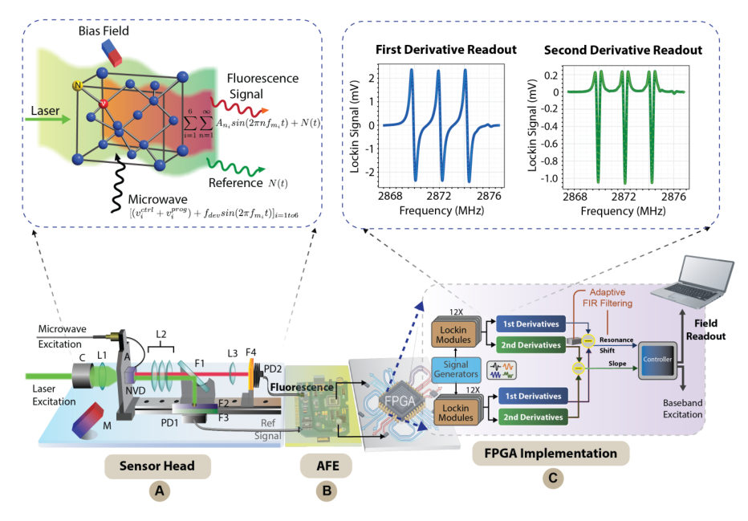
<figcaption class="paper-figure-caption"><b>Fig 1.</b> Figure 1: Setup Schematic: Post-diamond differential optical readout and derivative-resolved ODMR tracking. The nitrogen-vacancy (NV) ensemble is optically pumped under a static bias field and interrogated using six frequency-modulated microwave tones addressing six ODMR transitions. NV fluorescence provides the magnetic signal, while residual transmitted green pump light serves as a correlated laser-noise ref- erence. The pump is focused through the nitrogen-vacancy diamond (NVD), and the transmitted pump and fluorescence are collected along the same path and separated after the diamond by dichroic element F1. The fluorescence is detected by PD2 and the residual pump by PD1. The resonance...</figcaption>
</figure>
<figure class="paper-figure-card">
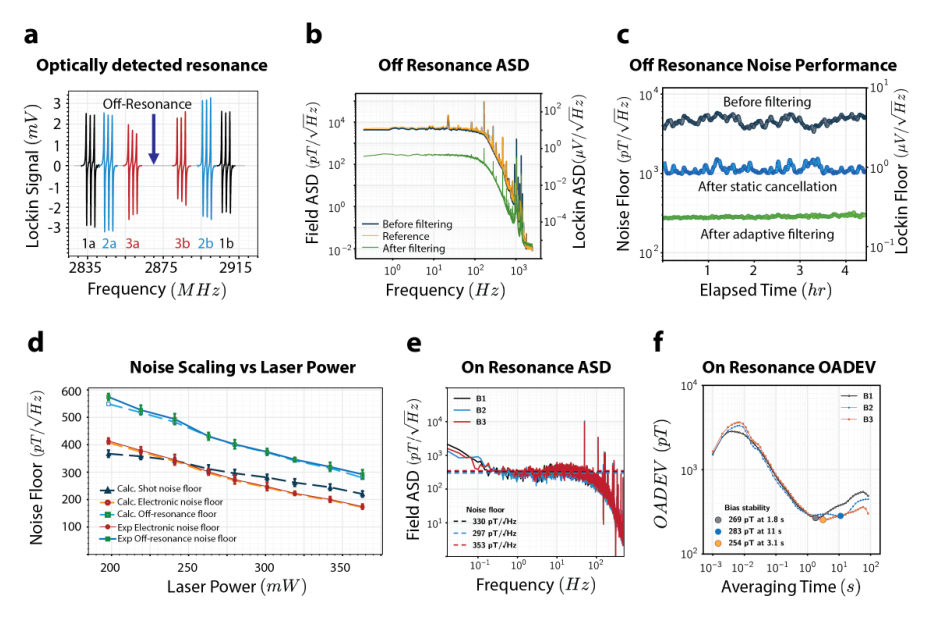
<figcaption class="paper-figure-caption"><b>Fig 2.</b> Figure 2: Three-axis readout and adaptive laser-noise cancellation. (a) Demodulated ODMR spectrum containing six addressed transitions, grouped into three Zeeman-split pairs used to reconstruct B1, B2, and B3. The marked off-resonance point is used to measure the readout-noise floor without ODMR frequency-to-signal transduction. (b) Off-resonance amplitude spectral densities (ASDs) of the fluorescence, optical-reference, and adaptively corrected channels. The signals are acquired at 5 kS s−1 with lock-in amplifier filter set as eighth-order filter with low-pass cut-off frequency of approximately 102 Hz. Matching the reference with the adaptive FIR removes the correlated laser-noise...</figcaption>
</figure>
<figure class="paper-figure-card">
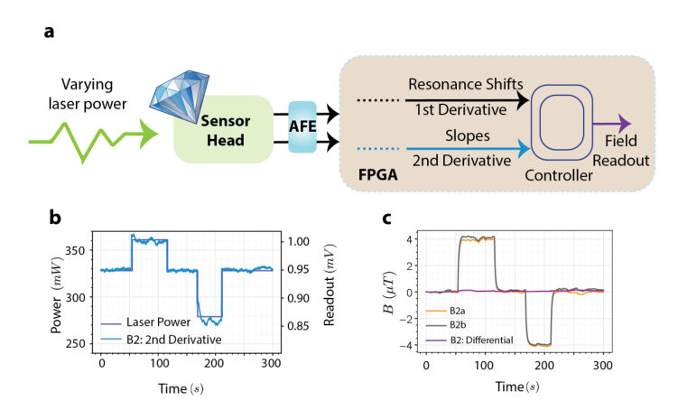
<figcaption class="paper-figure-caption"><b>Fig 3.</b> Figure 3: Second-derivative normalization of the digital frequency lock. (a) Control architecture. The first-derivative ODMR channel provides the resonance-detuning error, while the second-derivative channel provides the corresponding discriminator-slope estimate used to normalize the error before the frequency con- troller. (b) Applied laser-power sequence and measured second-derivative response of the B2 resonance pair. The curvature follows the optical-power variation and tracks the corresponding change in discriminator slope. (c) Simultaneously tracked B2a and B2b resonances and their differential magnetic readout. Laser-induced heating shifts both resonances in common through the...</figcaption>
</figure>
<figure class="paper-figure-card">
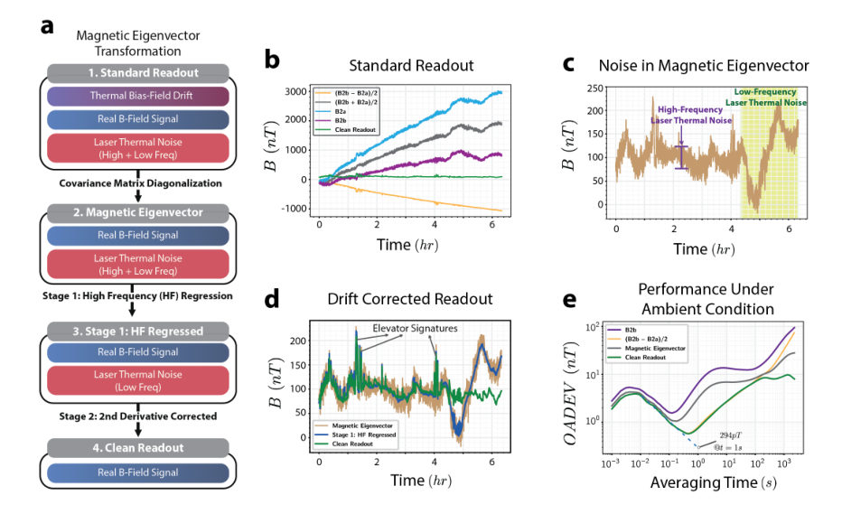
<figcaption class="paper-figure-caption"><b>Fig 4.</b> Figure 4: Long-term drift removal using magnetic eigenvector transformation. (a) Processing se- quence. Covariance-matrix diagonalisation first isolates the temperature-correlated bias-field drift from the mag- netic coordinate. High-frequency (HF) regression then removes the remaining fast laser-correlated component, followed by second-derivative correction of the slower laser-induced drift. (b) Six-hour long B2 resonance mea- surement acquired in an unshielded laboratory with active temperature regulation disabled. The B2a and B2b transitions exhibit strong common-mode thermal variation, while the conventional differential magnetic coordi- nate develops a pronounced drift that is...</figcaption>
</figure>
</div>

<p><strong>Summary.</strong> This paper presents an advanced, integrated digital architecture for NV-diamond magnetometers designed for stable operation in unshielded environments. By employing differential readout, second-derivative tracking, and a magnetic eigenvector transformation, the system successfully suppresses both high-frequency laser noise and slow thermal drifts. The results confirm that the magnetometer achieves near-fundamental shot-noise limits while maintaining exceptional long-term stability.</p>
<p><strong>Why it may be interesting.</strong> This work represents a significant engineering achievement in quantum sensing, providing robust methods to mitigate environmental noise sources (laser noise, thermal drift) that typically limit the practical deployment of quantum sensors, which is highly relevant to AMO physics applications.</p>
<details>
<summary>Detailed structure</summary>
<p><strong>Main problem.</strong> The primary challenge is achieving stable, drift-free, and high-sensitivity quantum magnetometry using NV-diamond magnetometers in unshielded, long-term, real-world environments.</p>
<p><strong>Main result.</strong> The proposed integrated digital architecture achieves an off-resonance noise factor matching the fundamental limit (1.0 $\pm$ 0.1) and demonstrates a ten-fold suppression of long-term drift.</p>
<p><strong>Method.</strong> The authors combine a dynamic differential readout for laser noise suppression, second-derivative Lorentzian tracking for gain correction, and a magnetic eigenvector transformation to eliminate slow, common-mode thermal drifts.</p>
<p><strong>Model / system.</strong> The system utilizes ensemble nitrogen-vacancy (NV) centers in diamond for three-axis magnetic field sensing at room temperature. The measurement relies on tracking multiple Zeeman-split ODMR transitions to isolate the external magnetic signal from environmental drifts.</p>
<p><strong>Key observables.</strong> Off-resonance noise factor, three magnetic projections ($B_1, B_2, B_3$), and the residual noise floor over long time scales.</p>
<p><strong>Important parameters / regimes.</strong> Off-resonance noise factor of $1.0 \pm 0.1$; ten-fold suppression of long-term drift; ambient unshielded conditions.</p>
<p><strong>Assumptions / limitations.</strong> Conventional stabilization techniques are insufficient for long-term, unshielded operation, necessitating intrinsic resonance tracking for drift correction.</p>
<p><strong>Figures summary.</strong> Figures illustrate the setup schematic for differential optical readout, the use of six simultaneously addressed ODMR transitions in three Zeeman-split pairs, and noise density plots comparing various filtering techniques.</p>
<p><strong>Paper structure.</strong> The paper details the limitations of existing magnetometers, introduces the novel digital architecture (differential readout, second-derivative tracking, eigenvector transformation), presents the experimental results showing noise floor matching and drift suppression, and concludes with the feasibility of field-ready quantum magnetometry.</p>
</details>
<details>
<summary>Abstract</summary>
<p>Ensemble nitrogen-vacancy (NV) diamond magnetometers combine high sensitivity with vector-field reconstruction, but practical deployment is limited by errors arising from high-frequency laser noise during short-duration operations and slow-varying gain fluctuations and offset drift during long-term operation. Here, we present an integrated digital architecture for achieving NV magnetometry stability across distinct timescales. A dynamic differential readout continuously balances fluorescence and reference channels to suppress correlated laser noise. Second-derivative Lorentzian lineshape tracking enables in-situ correction of slope variations arising from slow changes in gain and optical excitation. We further identify temperature-induced bias-magnet fluctuations as a dominant source of long-term drift and introduce a magnetic eigenvector transformation that uses the intrinsic response of NV resonances to eliminate these variations. We show, under unshielded ambient conditions, that this architecture achieves an off-resonance noise factor of 1.0 $\pm$ 0.1, matching the fundamental limit with ten-fold suppression of long-term drift, enabling stable, field-ready quantum magnetometry.</p>
</details>
<p><sub><a href="#top">↑ back to top</a></sub></p>

<p><a id="paper-2609.16506"></a></p>
<h3 id="unsupervised-machine-learning-of-the-contact-process"><a href="http://arxiv.org/abs/2609.16506v1">Unsupervised Machine Learning of the Contact Process</a></h3>
<p><strong>Authors:</strong> L. T. Brito, G. A. Alves, F. W. S. Lima, A. Macedo-Filho, R. S. Ferreira, T. F. A. Alves<br>
<strong>Type:</strong> theory · <strong>Category:</strong> statistical mechanics · <strong>PDF:</strong> <a href="https://arxiv.org/pdf/2609.16506v1">https://arxiv.org/pdf/2609.16506v1</a><br>
<strong>Analysis basis:</strong> full PDF text, analyzed in chunks
<strong>Topic relevance:</strong> <code>driven-dissipative phase transition</code> <strong>3/5</strong> · <code>non-equilibrium universality</code> <strong>3/5</strong> · <code>methods for driven-dissipative</code> <strong>2/5</strong></p>
<div class="figure-strip-hint">↔ Scroll figures horizontally</div>
<div class="paper-figures-scroll">
<figure class="paper-figure-card">

<figcaption class="paper-figure-caption"><b>Fig 1.</b> Figure 1: Scatter plot of the two leading principal components, 𝑝1 and 𝑝2, for the contact process on the square lattice with 𝐿= 64. The color scale represents the rescaled control parameter ̂𝜆∈[0, 1], corresponding to 𝜆∈[0.5𝜆𝑐, 1.5𝜆𝑐]. The compact cloud around the origin corresponds to configurations close to the absorbing state, whereas the two extended sign-related branches are associated predominantly with the active phase and the two-branch structure are due to the sign-reversed data augmentation used in the PCA analysis.</figcaption>
</figure>
<figure class="paper-figure-card">
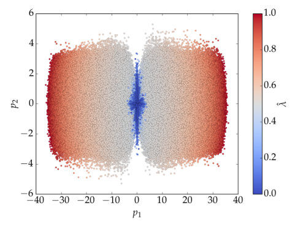
<figcaption class="paper-figure-caption"><b>Fig 2.</b> Fig. 1 shows the projections onto the two leading principal components, 𝑝1 and 𝑝2, for 𝐿= 64. Each point represents a microscopic configuration, colored according to the rescaled parameter ̂𝜆, which maps 𝜆∈[0.5𝜆𝑐, 1.5𝜆𝑐] onto [0, 1]. At small ̂𝜆, configurations form a narrow cluster near the origin, reflecting the low activity of the absorbing regime. As 𝜆approaches and exceeds the critical region, the distribution broadens and develops two approximately sign-related branches along 𝑝1. These outer clouds, mainly associated with the active phase, possess a two-branch structure resulting from the sign-reversed data augmentation. Although this two-branch structure is artificial, the transition...</figcaption>
</figure>
<figure class="paper-figure-card">
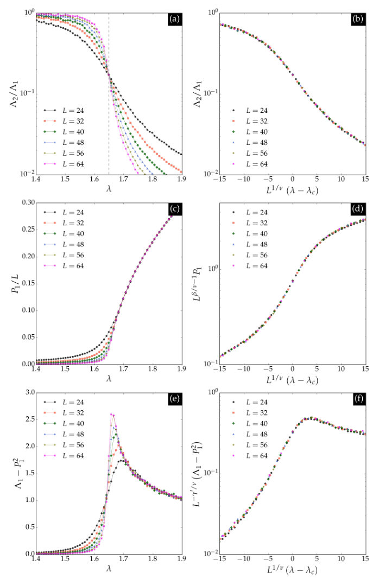
<figcaption class="paper-figure-caption"><b>Fig 3.</b> Figure 2: Principal component analysis of the contact process on the square lattice for different linear system sizes 𝐿. (a) Ratio between the two largest eigenvalues, Λ2∕Λ1, as a function of 𝜆. The dashed vertical line indicates 𝜆𝑐= 1.64877. (b) Finite-size collapse of Λ2∕Λ1 as a function of 𝐿1∕𝜈⟂(𝜆−𝜆𝑐). (c) PCA-based order parameter 𝑃1∕𝐿. The PCA-based order parameter coincides with the density of active sites. (d) Corresponding finite-size collapse, 𝐿𝛽∕𝜈⟂−1𝑃1. (e) PCA fluctuation Λ1 −𝑃2 1 . (f) Corresponding finite-size collapse, 𝐿−𝛾′∕𝜈⟂(Λ1 −𝑃2 1 ). The numerical values of critical exponents are 𝜈⟂= 0.7333, 𝛽= 0.5834, and 𝛾′ = 0.2998[3].</figcaption>
</figure>
<figure class="paper-figure-card">
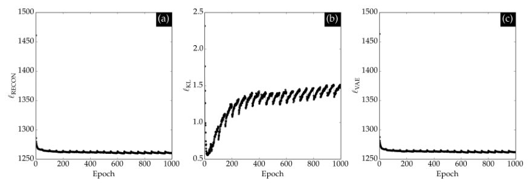
<figcaption class="paper-figure-caption"><b>Fig 4.</b> Figure 3: Training history of the heteroscedastic VAE for the contact process on the square lattice with 𝐿= 64. Panels (a)–(c) show the reconstruction loss 𝓁RECON, the Kullback–Leibler divergence 𝓁KL, and the total loss 𝓁VAE = 𝓁RECON + 𝓁KL, respectively. The reconstruction loss decreases rapidly before reaching a slowly varying regime, while the Kullback–Leibler contribution remains finite. Small periodic variations arise from training 20 non-overlapping dataset chunks sequentially for 50 epochs each.</figcaption>
</figure>
<figure class="paper-figure-card">
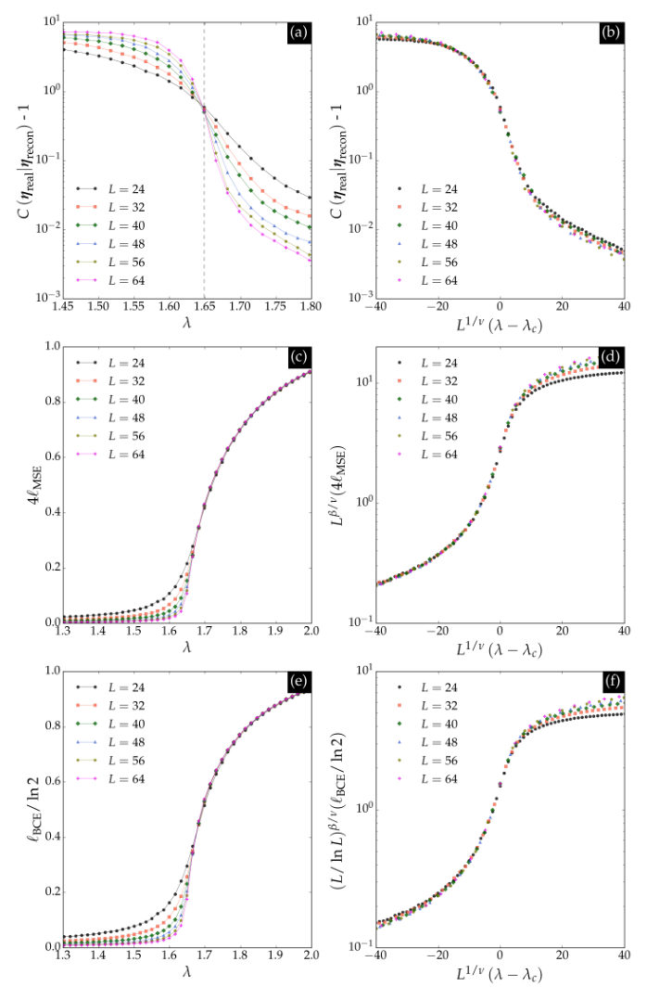
<figcaption class="paper-figure-caption"><b>Fig 5.</b> Figure 4: Heteroscedastic variational autoencoder results for the contact process on the square lattice for different linear system sizes 𝐿. (a) Excess normalized correlation 𝐶(𝜼real ∣𝜼recon) −1 between the input and reconstructed configurations as a function of 𝜆. The dashed vertical line marks 𝜆𝑐= 1.64877. (b) Finite-size collapse of the correlation as a function of 𝐿1∕𝜈⟂(𝜆−𝜆𝑐). (c) Normalized mean-squared reconstruction error 𝓁MSE. (d) Corresponding finite-size scaling, 𝐿𝛽∕𝜈⟂(4𝓁MSE). (e) Normalized binary-cross-entropy reconstruction error 𝓁BCE∕ln 2. (f) Corresponding collapse including the logarithmic finite-size correction, (𝐿∕ln 𝐿)𝛽∕𝜈⟂𝓁BCE∕ln 2. The collapses use 𝜈⟂= 0.7333 and 𝛽=...</figcaption>
</figure>
</div>

<p><strong>Summary.</strong> This work applies unsupervised machine learning (PCA and VAE) to analyze the active-absorbing phase transition of the Contact Process. The authors overcome technical hurdles—such as the positive-definite nature of the data—by modifying the ML inputs (e.g., sign-reversing data augmentation or using adaptive priors). This demonstrates that successful ML analysis of complex physical transitions requires deep incorporation of the system's underlying physical symmetries and constraints.</p>
<p><strong>Why it may be interesting.</strong> It provides a blueprint for applying advanced ML techniques to non-equilibrium statistical physics problems where standard equilibrium assumptions break down, offering insights into characterizing critical phenomena.</p>
<details>
<summary>Detailed structure</summary>
<p><strong>Main problem.</strong> Characterizing the active-absorbing phase transition in the Contact Process using unsupervised machine learning methods.</p>
<p><strong>Main result.</strong> The success of ML methods in phase transitions critically depends on tailoring the representation to respect the system's physical constraints, such as data augmentation for PCA or using parameter-dependent priors for VAEs.</p>
<p><strong>Method.</strong> The study employs Principal Component Analysis (PCA) and Variational Autoencoders (VAEs) to analyze the system's configuration space.</p>
<p><strong>Model / system.</strong> The Contact Process (CP) is studied on lattices (1D, 2D, triangular), which exhibits a continuous active-absorbing phase transition belonging to the Directed Percolation universality class.</p>
<p><strong>Key observables.</strong> Order parameter ($
ho$), finite-size scaling ratios (e.g., $\Lambda_2/\Lambda_1$), and reconstruction errors ($\mathcal{L}_{	ext{MSE}}$, $\mathcal{L}_{	ext{BCE}}$).</p>
<p><strong>Important parameters / regimes.</strong> The control parameter $\lambda$ (infection rate relative to recovery rate) and system size $L$.</p>
<p><strong>Assumptions / limitations.</strong> Standard ML techniques fail due to the positive-definite nature of CP configurations, necessitating data augmentation (sign-reversal) or specialized priors (heteroscedastic Gaussian prior).</p>
<p><strong>Figures summary.</strong> Figures demonstrate the finite-size scaling collapse of various observables (eigenvalue ratios, order parameter estimates, reconstruction errors) for both PCA and VAE analyses across the critical point.</p>
<p><strong>Paper structure.</strong> The paper first establishes the physical problem (CP transition) and the failure modes of standard ML techniques. It then details the necessary methodological fixes (data augmentation for PCA, heteroscedastic prior for VAE) and demonstrates their success by showing the recovery of known critical scaling laws.</p>
</details>
<details>
<summary>Abstract</summary>
<p>We investigate how unsupervised machine-learning methods can characterize the active-absorbing phase transition in the contact process in one and two spatial dimensions. Our analysis focuses on principal component analysis (PCA) and variational autoencoders (VAEs), and we show that direct applications of these methods encounter a central difficulty: contact process configurations are intrinsically positive-definite. In the PCA case, standard centering procedures fail to isolate the order parameter in the leading component. To address this, we augment the data with sign-reversed configurations, creating a balanced dataset with zero mean while preserving the density information required to describe the transition. This preprocessing allows the dominant principal component to recover the order parameter and reproduce the expected finite-size scaling near criticality. For VAEs, we find a related limitation: a fixed Gaussian prior does not provide sufficient latent regularization across the full range of control parameters and system sizes for positive-definite data. We overcome this by adopting a heteroscedastic Gaussian prior that adapts to the control parameter, leading to a substantial improvement in the finite-size scaling of reconstruction-based observables near the critical threshold. Taken together, these results highlight a key lesson: the success of machine learning in phase-transition problems does not rely on algorithmic complexity alone, but on tailoring the representation to respect the physical structure of the system, including its intrinsic constraints and symmetries.</p>
</details>
<p><sub><a href="#top">↑ back to top</a></sub></p>

<p><a id="paper-2609.16643"></a></p>
<h3 id="accurate-noise-spectroscopy-using-quantum-sensing-ensembles"><a href="http://arxiv.org/abs/2609.16643v1">Accurate noise spectroscopy using quantum sensing ensembles</a></h3>
<p><strong>Authors:</strong> Dhilan T Vallury, Nikolai Dontschuk, Alexander M Jakob, Alexander J Healey, David A Simpson<br>
<strong>Type:</strong> both · <strong>Category:</strong> other · <strong>PDF:</strong> <a href="https://arxiv.org/pdf/2609.16643v1">https://arxiv.org/pdf/2609.16643v1</a><br>
<strong>Analysis basis:</strong> full PDF text, analyzed in chunks
<strong>Topic relevance:</strong> <code>QC/QI experiment</code> <strong>3/5</strong> · <code>quantum measurements</code> <strong>2/5</strong> · <code>correlated / nonlocal dissipation</code> <strong>1/5</strong> · <code>quantum optics experiment</code> <strong>1/5</strong></p>
<div class="figure-strip-hint">↔ Scroll figures horizontally</div>
<div class="paper-figures-scroll">
<figure class="paper-figure-card">

<figcaption class="paper-figure-caption"><b>Fig 1.</b> Low-resolution page preview, page 2</figcaption>
</figure>
<figure class="paper-figure-card">

<figcaption class="paper-figure-caption"><b>Fig 2.</b> Low-resolution page preview, page 3</figcaption>
</figure>
<figure class="paper-figure-card">

<figcaption class="paper-figure-caption"><b>Fig 3.</b> Low-resolution page preview, page 4</figcaption>
</figure>
<figure class="paper-figure-card">

<figcaption class="paper-figure-caption"><b>Fig 4.</b> Low-resolution page preview, page 5</figcaption>
</figure>
<figure class="paper-figure-card">

<figcaption class="paper-figure-caption"><b>Fig 5.</b> Low-resolution page preview, page 6</figcaption>
</figure>
</div>

<p><strong>Summary.</strong> This paper details a rigorous analysis procedure for extracting the true source noise spectrum from measurements taken using large ensembles of quantum sensors. By mathematically incorporating the spatial distribution of the sensors, the authors overcome ambiguities inherent in ensemble averaging. This methodology paves the way for quantitative, broadband noise characterization using solid-state quantum platforms.</p>
<p><strong>Why it may be interesting.</strong> This work is highly relevant to AMO physics as it deals with using quantum systems (NV centers) as highly sensitive probes to characterize the local electromagnetic environment (noise spectroscopy), a core topic in quantum sensing and open quantum systems.</p>
<details>
<summary>Detailed structure</summary>
<p><strong>Main problem.</strong> The paper addresses the challenge of accurately reconstructing the true source noise spectrum $S_0(\omega)$ from ensemble coherence measurements $\langle C(T) 
angle$ when the sensing ensemble has a variable coupling depth distribution.</p>
<p><strong>Main result.</strong> The authors present an analysis procedure that incorporates the coupling distribution $P(d)$ to accurately extract the source noise spectrum, demonstrating its applicability to NV centers in diamond.</p>
<p><strong>Method.</strong> The method involves analyzing the ensemble coherence decay, which is modeled as an integral over the depth distribution, and using approximations (like the short-T limit) to invert the measured decay into the underlying noise spectrum.</p>
<p><strong>Model / system.</strong> The system studied is quantum sensing ensembles, specifically using Nitrogen-Vacancy (NV) centers in diamond. The noise environment is modeled as separable, $S(\omega, d) = S_0(\omega)D(d)$, where $D(d)$ describes depth variation.</p>
<p><strong>Key observables.</strong> Ensemble coherence $\langle C(T) 
angle$, the source noise spectrum $S_0(\omega)$, and the depth distribution $P(d)$.</p>
<p><strong>Important parameters / regimes.</strong> Measurement time $T$, depth distribution parameters (e.g., depth range, width), and noise frequency $\omega$.</p>
<p><strong>Assumptions / limitations.</strong> Key assumptions include modeling the noise as separable across depth and assuming specific functional forms for the depth distribution (e.g., $d^{-3}$ scaling). A major limitation is the inherent ambiguity between the amplitude of $S_0$ and the scale of $P(d)$.</p>
<p><strong>Figures summary.</strong> Figures illustrate the accuracy of fitting methods for depth profiles and source spectra, comparing 'naive' fitting against reconstruction methods that account for the depth distribution. Specific comparisons are made between 2 keV and 4 keV ensembles.</p>
<p><strong>Paper structure.</strong> The paper develops the theoretical framework for ensemble averaging, analyzes the ambiguities in parameter extraction, and then applies this procedure to model systems (like NV centers) to demonstrate the quantitative extraction of broadband noise spectra.</p>
</details>
<details>
<summary>Abstract</summary>
<p>Noise spectroscopy with quantum sensors is a powerful tool for characterising the properties of the sensor environment and detecting critical magnetic phenomena. While replacing single sensors with large ensembles promises substantial gains in measurement sensitivity and field of view, the output becomes difficult to interpret when there is a variable coupling to targets across the sensing ensemble. In this work we present an analysis procedure for accessing the true source noise spectrum using ensemble coherence from dynamical decoupling measurements. We show that sequence timing plays a dual role in ensemble noise spectroscopy, setting both the frequency selectivity and the weighted collection of signal across the ensemble, and demonstrate how incorporation of the coupling distribution allows accurate parameter extraction of the noise. We apply this procedure to a model system, shallow nitrogen-vacancy centres in diamond, and show that consistent information about the spectral character of MHz-range surface noise can be obtained from two sensing ensembles featuring distinct depth distributions. Our results pave the way for using large quantum sensor ensembles for quantitative, broadband noise spectroscopy, with straightforward extension to other solid-state and molecular sensing platforms.</p>
</details>
<p><sub><a href="#top">↑ back to top</a></sub></p>

<p><a id="paper-2609.16499"></a></p>
<h3 id="anomalous-first-passage-in-evolution-edge-kpz-theory"><a href="http://arxiv.org/abs/2609.16499v1">Anomalous First Passage in Evolution: Edge-KPZ Theory</a></h3>
<p><strong>Authors:</strong> Tetsuhiro S. Hatakeyama<br>
<strong>Type:</strong> theory · <strong>Category:</strong> statistical mechanics · <strong>PDF:</strong> <a href="https://arxiv.org/pdf/2609.16499v1">https://arxiv.org/pdf/2609.16499v1</a><br>
<strong>Analysis basis:</strong> full PDF text, analyzed in chunks
<strong>Topic relevance:</strong> <code>non-equilibrium universality</code> <strong>3/5</strong> · <code>Keldysh / 2PI / non-Gaussian methods</code> <strong>2/5</strong> · <code>methods for driven-dissipative</code> <strong>2/5</strong></p>
<div class="figure-strip-hint">↔ Scroll figures horizontally</div>
<div class="paper-figures-scroll">
<figure class="paper-figure-card">
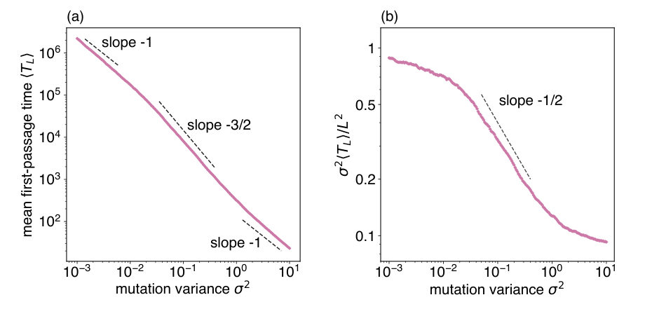
<figcaption class="paper-figure-caption"><b>Fig 1.</b> FIG. 1. Mean first-passage times in neutral evolution. (a) Mean first-passage time for any individual to exit [−L, L] at N = 1000 and L = 50, as a function of the mutation variance σ2. (b) The same data multiplied by σ2/L2. Symbols represent means over 1000 realizations at each parameter point. Dashed segments are slope guides.</figcaption>
</figure>
<figure class="paper-figure-card">
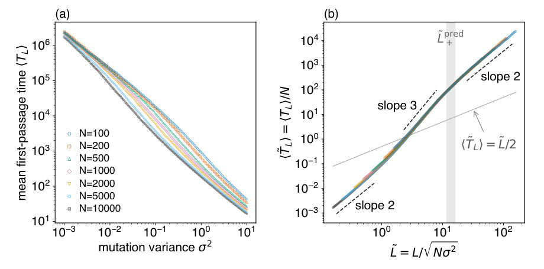
<figcaption class="paper-figure-caption"><b>Fig 2.</b> FIG. 2. Scaling collapse of the first-passage law. (a) Mean first-passage time versus mutation variance for seven population sizes, all at L = 50. (b) The same data with time rescaled by N and phenotypic distance by σ √</figcaption>
</figure>
<figure class="paper-figure-card">
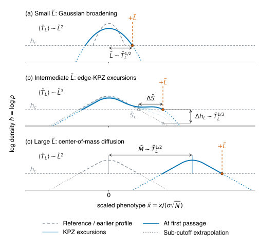
<figcaption class="paper-figure-caption"><b>Fig 3.</b> FIG. 3. Mechanism for the quadratic–cubic–quadratic law. (a) Gaussian broadening gives quadratic scaling at small dis- tances. (b) On the exponential reference tail inferred from coalescence, the height gap ∆hL from the reference profile at the target to hc is proportional to ∆˜S = ˜SL −˜Sc. In the edge-KPZ theory, height excursions growing as ˜t1/3 give a cu- bic passage timescale. (c) Center-of-mass diffusion of a cloud with finite characteristic width restores quadratic scaling at large distances. The log-density profiles share a common hori- zontal scale. Horizontal dashed lines mark the one-individual cutoff hc, orange vertical lines mark the target, and dotted continuations are...</figcaption>
</figure>
<figure class="paper-figure-card">
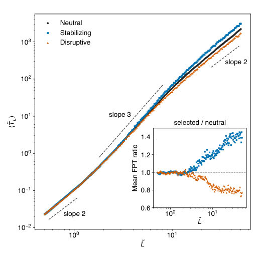
<figcaption class="paper-figure-caption"><b>Fig 4.</b> FIG. 4. First-passage times under weak selection. Scaled mean first-passage times under neutral, weak stabilizing, and weak disruptive selection at N = 1000, L = 50, and λ = 1. Symbols represent means over 1000 realizations per condition and parameter point. The inset shows each selected mean divided by the neutral mean at the same mutation variance; its horizontal line marks a ratio of one. Dashed segments in the main plot are guides for slopes 2, 3, and 2.</figcaption>
</figure>
</div>

<p><strong>Summary.</strong> This theoretical paper develops an edge-KPZ theory to explain the anomalous scaling of the first passage time in neutral population evolution. By combining coalescent theory with the Kardar-Parisi-Zhang equation, the authors show that the time to reach a distant phenotype scales anomalously with mutation variance. This work provides a deep link between population genetics and non-equilibrium statistical physics.</p>
<p><strong>Why it may be interesting.</strong> The connection between population genetics (Wright-Fisher model) and non-equilibrium statistical physics tools like KPZ theory provides a powerful, universal framework for understanding how collective fluctuations dictate macroscopic evolutionary rates.</p>
<details>
<summary>Detailed structure</summary>
<p><strong>Main problem.</strong> The paper investigates the anomalous scaling of the first passage time (FPT) in evolutionary dynamics, specifically how the time required for a phenotype to reach a distant state is determined by mutation and population fluctuations.</p>
<p><strong>Main result.</strong> Neutral Wright-Fisher evolution exhibits an anomalous FPT scaling proportional to $    ilde{L}^3$ in an intermediate regime, which is described by an edge-KPZ theory.</p>
<p><strong>Method.</strong> The authors combine coalescent theory with the Kardar-Parisi-Zhang (KPZ) equation, analyzing the evolution of the population density via stochastic partial differential equations (SPDEs) and using Cole-Hopf transformations.</p>
<p><strong>Model / system.</strong> The model is neutral Wright-Fisher evolution, where phenotypic change is driven by Gaussian mutations ($\sigma^2$) and population dynamics are governed by density evolution equations. The analysis focuses on the separation distribution of two lineages over time.</p>
<p><strong>Key observables.</strong> Mean first-passage time ($\langle T_L 
angle$), population density $
ho(x, t)$, and the separation probability $p_{	ext{pair}}(S)$.</p>
<p><strong>Important parameters / regimes.</strong> Mutation variance ($\sigma^2$), population size ($N$), and the target phenotypic distance ($L$).</p>
<p><strong>Assumptions / limitations.</strong> The analysis relies on the diffusion approximation for smooth densities and uses scaling limits ($   ilde{t} = t/N$) to derive continuum equations.</p>
<p><strong>Figures summary.</strong> Figures illustrate the anomalous scaling of $\langle T_L 
angle$ vs. $\sigma^2$ (showing $\propto (\sigma^2)^{-3/2}$) and confirm the scaling collapse of FPT data onto a master curve.</p>
<p><strong>Paper structure.</strong> The paper progresses from defining the physical problem (FPT in evolution) to deriving the continuum SPDE for density evolution, linking this to coalescence theory, and finally applying the KPZ framework to establish the three distinct scaling regimes ($ ilde{L}^2   o   ilde{L}^3   o   ilde{L}^2$).</p>
</details>
<details>
<summary>Abstract</summary>
<p>The pace of evolution depends on how rapidly new phenotypes arise. We show that neutral Wright-Fisher evolution exhibits anomalous first passage despite diffusive mutations. The mean time for the first individual to reach a prescribed phenotypic distance scales approximately as $(σ^2)^{-3/2}$ with mutation variance $σ^2$. Two crossovers bound this regime, with inverse-variance scaling on either side. Combining coalescent theory with Kardar-Parisi-Zhang (KPZ) fluctuations at the dilute population edge, we develop an edge-KPZ theory of all three regimes. The anomaly persists under weak selection.</p>
</details>
<p><sub><a href="#top">↑ back to top</a></sub></p>

<p><a id="paper-2609.16460"></a></p>
<h3 id="environmental-records-unlock-universal-quantum-computation-from-thermal-decoherence"><a href="http://arxiv.org/abs/2609.16460v1">Environmental records unlock universal quantum computation from thermal decoherence</a></h3>
<p><strong>Authors:</strong> Chenfeng Cao, Qi Zhao<br>
<strong>Type:</strong> theory · <strong>Category:</strong> quantum information and computing · <strong>PDF:</strong> <a href="https://arxiv.org/pdf/2609.16460v1">https://arxiv.org/pdf/2609.16460v1</a><br>
<strong>Analysis basis:</strong> full PDF text, analyzed in chunks
<strong>Topic relevance:</strong> <code>quantum measurements</code> <strong>3/5</strong> · <code>correlated / nonlocal dissipation</code> <strong>1/5</strong> · <code>driven-dissipative phase transition</code> <strong>1/5</strong> · <code>methods for driven-dissipative</code> <strong>1/5</strong> · <code>non-equilibrium universality</code> <strong>1/5</strong></p>
<div class="figure-strip-hint">↔ Scroll figures horizontally</div>
<div class="paper-figures-scroll">
<figure class="paper-figure-card">
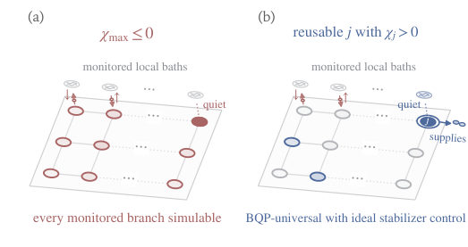
<figcaption class="paper-figure-caption"><b>Fig 1.</b> FIG. 1. The local calibrations determine the two sides of Theorem 1. (a) Each thermal-idle location has its own χi. If χmax ≤0, every monitored call has a nonnegative stabilizer decomposition. (b) If one repeatedly accessible location has χi &gt; 0, its quiet branch provides distillable ancillas to the stabilizer processor.</figcaption>
</figure>
<figure class="paper-figure-card">
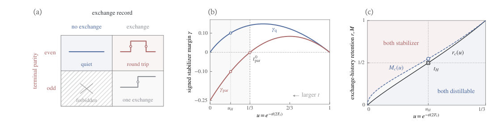
<figcaption class="paper-figure-caption"><b>Fig 2.</b> FIG. 2. (a) The exchange bit and the terminal-parity bit are incomparable: a history with even terminal parity can still contain exchanges, whereas odd parity implies at least one. (b) Signed stabilizer margins at pe = 1/4 and T2 = 2T1 versus u = e−t/(2T1), with exposure increasing to the left. The quiet margin γq stays positive at every finite exposure, while the terminal-parity margin γpar crosses zero at u = 1/3 (t0 par = 2T1 ln 3). Shading marks the window of Theorem 3. At uH = 3 −2 √</figcaption>
</figure>
<figure class="paper-figure-card">
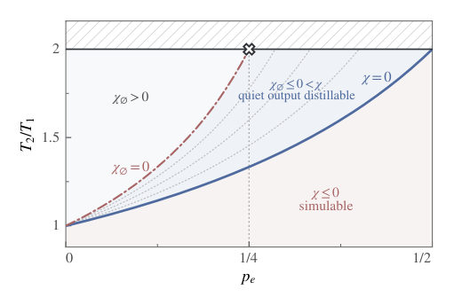
<figcaption class="paper-figure-caption"><b>Fig 3.</b> FIG. 3. Calibration plane for independent local baths. The boundary uses the homogeneous T2 of the model. The lines show the moni- tored boundary χ = 0, the bare-|+⟩short-time line χ∅= 0, and the complete-positivity limit T2 = 2T1. The faint lines give the zero- initial-slope condition without terminal parity for absorption-miss probabilities m↑= 1/4, 1/2, 3/4. The cross marks (pe, T2/T1) = (1/4, 2), the parameters of Corollary 1.</figcaption>
</figure>
</div>

<p><strong>Summary.</strong> This work classifies quantum computation capabilities based on how a processor interacts with a thermal bath while monitoring its environment. It establishes a critical parameter ($\chi$) that dictates whether the system is classically simulable or capable of universal quantum computation. The key finding is that even minimal environmental records can preserve enough quantum information to enable quantum advantage.</p>
<p><strong>Why it may be interesting.</strong> It provides a rigorous, quantitative link between the thermodynamics of open quantum systems (thermal decoherence) and the fundamental limits of quantum computation, suggesting that environmental monitoring itself can be a resource.</p>
<details>
<summary>Detailed structure</summary>
<p><strong>Main problem.</strong> The paper determines the computational classification (classically simulable vs. quantum universal) of a stabilizer processor coupled to a monitored thermal bath, based on the environmental records retained by its controller.</p>
<p><strong>Main result.</strong> Quantum universal computation is possible if the system parameters exceed a critical boundary ($\chi > 0$), even when only retaining minimal environmental records like whether any exchange occurred.</p>
<p><strong>Method.</strong> The analysis uses exact computational classification based on energy-counting thermal-idle instruments, deriving time-dependent stabilizer margins ($\gamma$) for different readout protocols.</p>
<p><strong>Model / system.</strong> The model is a quantum processor with ideal stabilizer control coupled to independent local Markov baths, undergoing thermal idle periods where energy exchange is monitored.</p>
<p><strong>Key observables.</strong> Signed stabilizer margins ($\gamma_q, \gamma_{par}, \gamma_{\emptyset}$), the calibration number ($\chi$), and the computational boundary $\chi=0$.</p>
<p><strong>Important parameters / regimes.</strong> Relaxation time ($T_1$), homogeneous coherence time ($T_2$), and equilibrium excited-state population ($p_e$).</p>
<p><strong>Assumptions / limitations.</strong> Assumes ideal stabilizer control and independent local Markov baths; the analysis compares resource-side records versus the averaged channel.</p>
<p><strong>Figures summary.</strong> Figures illustrate the computational boundary ($\chi_{\max} \le 0$ vs. $\chi > 0$) and compare the signed stabilizer margins for different readouts (quiet branch vs. terminal parity).</p>
<p><strong>Paper structure.</strong> The paper establishes the computational boundary using the ratio $(1-p_e)T_2/T_1$. It then compares the information retained by different readouts (full record, terminal parity, no exchange bit) to show that retaining minimal information can still herald quantum advantage when $\chi > 0$.</p>
</details>
<details>
<summary>Abstract</summary>
<p>At a fixed thermal exposure, the same stabilizer processor can be classically simulable or quantum universal, depending on which environmental records its controller retains. We give an exact computational classification of energy-counting thermal-idle instruments in a quantum processor with ideal stabilizer control and independent local Markov baths. The relaxation time $T_1$, homogeneous coherence time $T_2$, and equilibrium excited-state population $p_e$ determine an exact computational boundary at $(1-p_e)T_2/T_1=1$. If every location lies at or below it, branchwise nonnegative stabilizer decompositions give an explicit efficient classical sampler for the adaptive circuit and its full time-resolved exchange record. Above it at a single repeatedly accessible location, a suitable idle duration and no-exchange conditioning supply distillable ancillas and enable universal quantum computation with polynomial overhead. At finite temperature on the resource side, erasing the record at a sufficiently long, unsplit exposure makes the averaged channel stabilizer measure-and-prepare, and even a terminal parity check then yields only simulable branches. Yet at that same exposure, retaining only the bit recording whether any exchange occurred still heralds distillable ancillas, because a thermal round trip restores the parity after its first exchange has already removed the coherence.</p>
</details>
<p><sub><a href="#top">↑ back to top</a></sub></p>

<p><a id="paper-2609.16821"></a></p>
<h3 id="odd-diffusion-and-power-law-correlations-in-chiral-mass-transport-processes"><a href="http://arxiv.org/abs/2609.16821v1">Odd diffusion and power-law correlations in chiral mass-transport processes</a></h3>
<p><strong>Authors:</strong> Koushik Das, Animesh Hazra, Punyabrata Pradhan<br>
<strong>Type:</strong> theory · <strong>Category:</strong> statistical mechanics · <strong>PDF:</strong> <a href="https://arxiv.org/pdf/2609.16821v1">https://arxiv.org/pdf/2609.16821v1</a><br>
<strong>Analysis basis:</strong> full PDF text, analyzed in chunks
<strong>Topic relevance:</strong> <code>non-equilibrium universality</code> <strong>3/5</strong> · <code>Keldysh / 2PI / non-Gaussian methods</code> <strong>1/5</strong> · <code>correlated / nonlocal dissipation</code> <strong>1/5</strong> · <code>driven-dissipative phase transition</code> <strong>1/5</strong> · <code>methods for driven-dissipative</code> <strong>1/5</strong></p>
<div class="figure-strip-hint">↔ Scroll figures horizontally</div>
<div class="paper-figures-scroll">
<figure class="paper-figure-card">
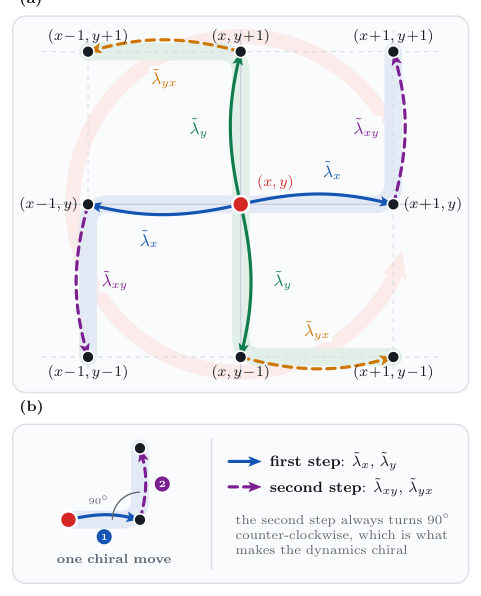
<figcaption class="paper-figure-caption"><b>Fig 1.</b> FIG. 1. Schematic diagram of the chiral dynamics on a square lattice. (a) During a microscopic time, mass trans- fer from the site (x, y) (red solid circle) along two orthog- onal (“L”-shaped) bonds simultaneously, and always in the counter-clockwise sense. Solid arrows correspond to the first- step transfer, from (x, y) to a nearest-neighbor site (black solid circles) along the x (blue) or y (green) direction; dashed ar- rows correspond to the second-step transfer, which carries the mass onward from that neighbor to a next-nearest-neighbor site along the perpendicular direction (purple and orange), and which introduces chirality in the dynamics. The pale bands trace the four “L”-shaped...</figcaption>
</figure>
<figure class="paper-figure-card">
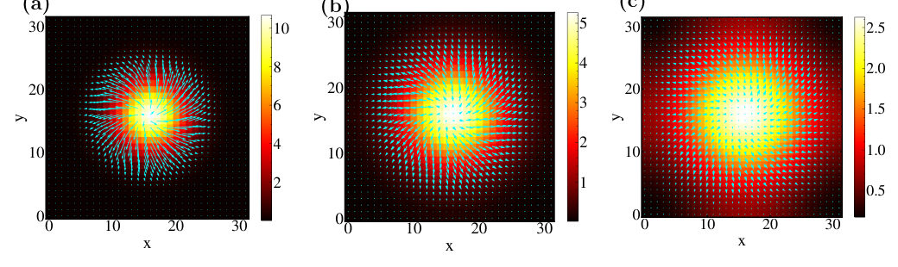
<figcaption class="paper-figure-caption"><b>Fig 2.</b> FIG. 2. Relaxation of a localized density profile on an infinite domain. Density (color shade) and current (arrows) profiles at different times: (a) T = 25, (b) T = 50, and (c) T = 100 for isotropic mass transfer. The initial condition is a delta-density profile with the entire mass concentrated at the origin; we take global density ¯ρ = 1, mass chipping (retention) parameters λ1 = 0.0, and λ2 = 0.0. One can see the circulating (transient) currents around the origin.</figcaption>
</figure>
<figure class="paper-figure-card">
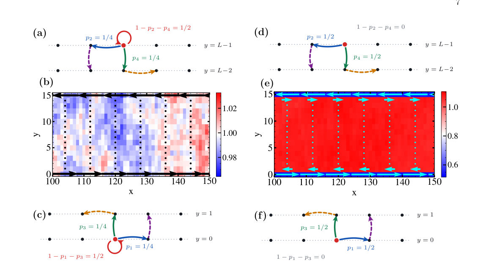
<figcaption class="paper-figure-caption"><b>Fig 3.</b> FIG. 3. Steady-state edge currents under open-boundary conditions. Panels (b) and (e) show heat maps of the steady-state density profile, with arrows indicating the current profiles. The schematic diagram above and below each of the heat maps give the corresponding mass-transfer rules at the two reflecting “walls” (edges), placed adjacent to y = (L −1) [panels (a) and (d)] and y = 0 [panels (c) and (f)]. Of the four chiral “L”-shaped moves, only the two moves whose path stays inside the slab survive at the edge (wall): p2, p4 at y = (L−1), so that p1 = p3 = 0, and p1, p3 at y = 0, so that p2 = p4 = 0. In panels (a) and (c), the surviving moves keep their bulk value 1/4, and with the remaining...</figcaption>
</figure>
<figure class="paper-figure-card">
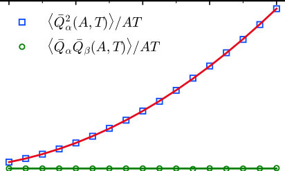
<figcaption class="paper-figure-caption"><b>Fig 4.</b> FIG. 4. Scaled steady-state variance of the space-time- integrated (cumulative) current in the full system over the time interval [0, T ] are plotted as a function of global density ρ for the isotropic chiral MCM. Open blue squares denote the scaled variance of the cumulative current, while open green circles denote the cross correlation between the two current components. The red line shows the theoretical prediction 2χαα obtained from Eqs. (51) and (85), and the green line shows 2χαβ (α ̸= β) from Eq. (85). The simulation parame- ters are as follows: System size Lx×Ly = 128×128, final time T = 500, mass chipping (retention) parameters λ1 = 0.4, and λ2 = 0.6.</figcaption>
</figure>
<figure class="paper-figure-card">
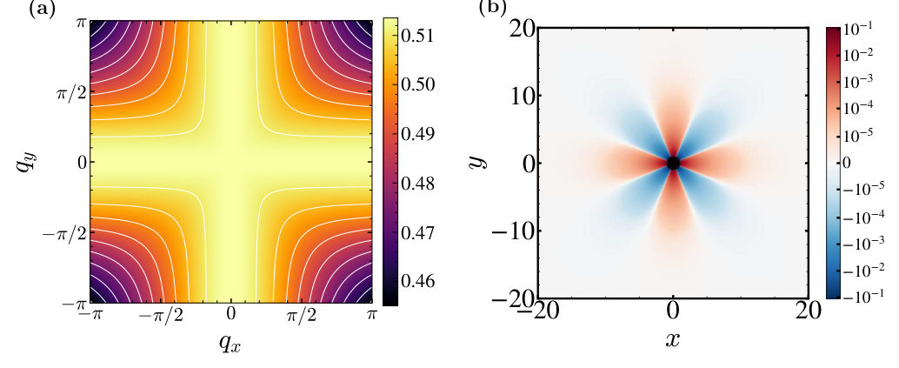
<figcaption class="paper-figure-caption"><b>Fig 5.</b> FIG. 5. Steady-state static structure factor and equal-time two-point density correlation function in chiral mass-transport models with isotropic mass-transfer rates. Panel (a): Heat map of the structure factor S(qx, qy) in wave vector space q = {qx, qy}. Panel (b): Heat map of the corresponding two-point density correlation in real space r = {x, y}. Here, the simulation parameters are as follows: global density ¯ρ = 1 and mass chipping (retention) parameters λ1 = 0.4, and λ2 = 0.6.</figcaption>
</figure>
</div>

<p><strong>Summary.</strong> This paper analyzes mass transport on a lattice driven by chiral hopping, which breaks fundamental symmetries. The key finding is that this 'odd diffusion' mechanism alone can generate universal, power-law decay in density correlations, even when the underlying hopping rates are isotropic. This establishes a new theoretical link between chirality, transport coefficients, and long-range spatial correlations in non-equilibrium statistical mechanics.</p>
<p><strong>Why it may be interesting.</strong> The connection between microscopic chiral transport rules and macroscopic power-law correlations in non-equilibrium steady states provides a powerful theoretical tool for understanding fluctuation phenomena in driven many-body systems.</p>
<details>
<summary>Detailed structure</summary>
<p><strong>Main problem.</strong> The study investigates how chiral mass-transport processes generate scale-invariant spatial correlations in non-equilibrium steady states, particularly in systems that are macroscopically isotropic.</p>
<p><strong>Main result.</strong> Odd diffusion provides a mechanism for algebraic decay in two-point density correlations, $C(r) \sim |r|^{-4}$, which is distinct from correlations arising from simple anisotropic hopping.</p>
<p><strong>Method.</strong> The authors employ exact calculations for steady-state density-density correlations and derive a non-equilibrium analog of the Green-Kubo relation by analyzing the continuum limit of the lattice dynamics.</p>
<p><strong>Model / system.</strong> The model is a mass-conserving Markov jump process on a square lattice, termed a chiral mass chipping model (MCM). The dynamics are explicitly chiral, breaking time-reversal and mirror symmetries.</p>
<p><strong>Key observables.</strong> Two-point density-density correlation function $C(r)$, structure factor in the zero-wavenumber limit, and the odd diffusion coefficient $D(	ext{odd})$.</p>
<p><strong>Important parameters / regimes.</strong> Chirality strength, the odd diffusion coefficient $D(	ext{odd})$, and the system size/boundary conditions (periodic vs. open).</p>
<p><strong>Assumptions / limitations.</strong> The derivation of the hydrodynamic equation relies on a gradient expansion, and the model assumes mass conservation throughout the process.</p>
<p><strong>Figures summary.</strong> Figure 1 schematically illustrates the chiral dynamics via an L-shaped path, while Figure 2 shows the relaxation of a localized density profile, indicating transient circulating currents.</p>
<p><strong>Paper structure.</strong> The paper establishes the microscopic model dynamics, derives the macroscopic hydrodynamic equation via gradient expansion, calculates the steady-state correlation functions, and analyzes the dual role of odd diffusion on fluctuations.</p>
</details>
<details>
<summary>Abstract</summary>
<p>We study mass-conserving Markov jump processes on a square lattice, where masses hop with a preferred rotational sense, thus breaking both time-reversal and mirror symmetries. We consider closed systems with both periodic and open (reflecting) boundaries, the latter supporting a steady-state edge current. We show that odd diffusion, arising from the chiral transport, generically provides a mechanism for the emergence of scale-invariant two-point density correlations in nonequilibrium steady states even in the presence of lattice rotation symmetry -- a mechanism that is qualitatively distinct from the well-known mechanism of anisotropic hopping. We exactly calculate the steady-state equal-time density-density correlations, which exhibit an algebraic decay, $C(\mathbf{r}) \sim |\mathbf{r}|^{-4}$ for $|\mathbf{r}| \gg 1$. This algebraic behavior results from the interplay between the off-diagonal components of the diffusion and mobility tensors, demonstrating that chiral transport alone can generate power-law correlations in isotropic driven systems. Remarkably, the structure factor in the zero-wavenumber limit and the amplitude of the power laws depend nontrivially on chirality. While increasing chirality initially suppresses large-scale density fluctuations, the fluctuations beyond a threshold odd-diffusion strength vary nonmonotonically with chirality and develop a cusp singularity.</p>
</details>
<p><sub><a href="#top">↑ back to top</a></sub></p>

<p><a id="paper-2609.16133"></a></p>
<h3 id="pulse-level-compilation-of-measurement-free-recovery-in-transmon-circuits"><a href="http://arxiv.org/abs/2609.16133v1">Pulse-Level Compilation of Measurement-Free Recovery in Transmon Circuits</a></h3>
<p><strong>Authors:</strong> Yi-Han Yu, Kai Xu, Heng Fan<br>
<strong>Type:</strong> theory · <strong>Category:</strong> quantum information and computing · <strong>PDF:</strong> <a href="https://arxiv.org/pdf/2609.16133v1">https://arxiv.org/pdf/2609.16133v1</a><br>
<strong>Analysis basis:</strong> full PDF text, analyzed in chunks
<strong>Topic relevance:</strong> <code>quantum measurements</code> <strong>3/5</strong> · <code>QC/QI experiment</code> <strong>2/5</strong> · <code>methods for driven-dissipative</code> <strong>2/5</strong></p>
<div class="figure-strip-hint">↔ Scroll figures horizontally</div>
<div class="paper-figures-scroll">
<figure class="paper-figure-card">
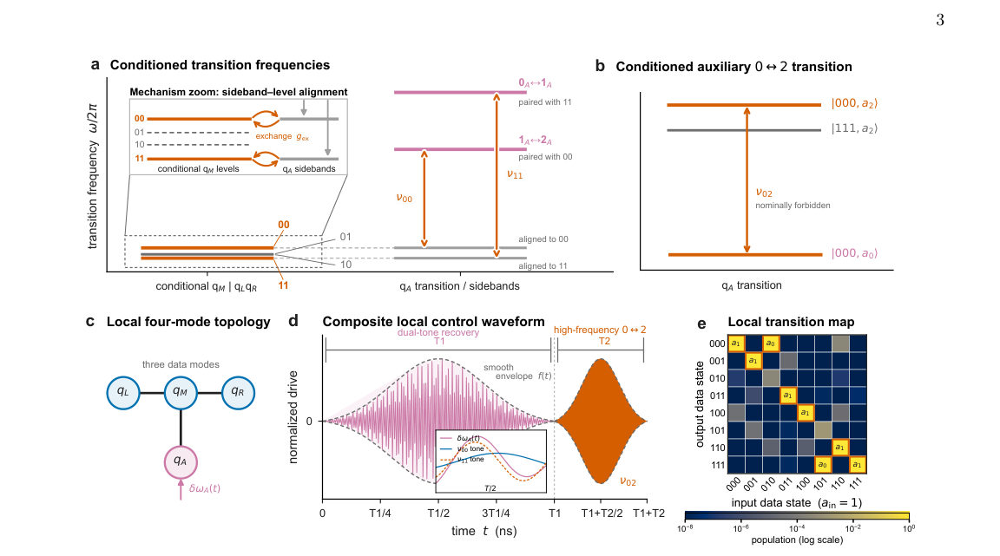
<figcaption class="paper-figure-caption"><b>Fig 1.</b> FIG. 2. Condition-selective local compilation in a four-mode module. a, Conditioned transition frequencies and modulation-generated sidebands at the selected working point. b, Conditioned auxiliary 0 ↔2 transition: the 00-conditioned line is selected while the 11 branch remains a spectator. c, Local topology: qL −qM −qR form the data chain, while leaf auxiliary qA couples to qM and receives δωA(t). d, Composite local control waveform, consisting of the dual-tone recovery segment followed by the conditional auxiliary 0 ↔2 segment. e, Assigned-data populations for the complete local waveform over all eight inputs. Cell color sums over auxiliary occupations; highlighted cells mark the...</figcaption>
</figure>
<figure class="paper-figure-card">
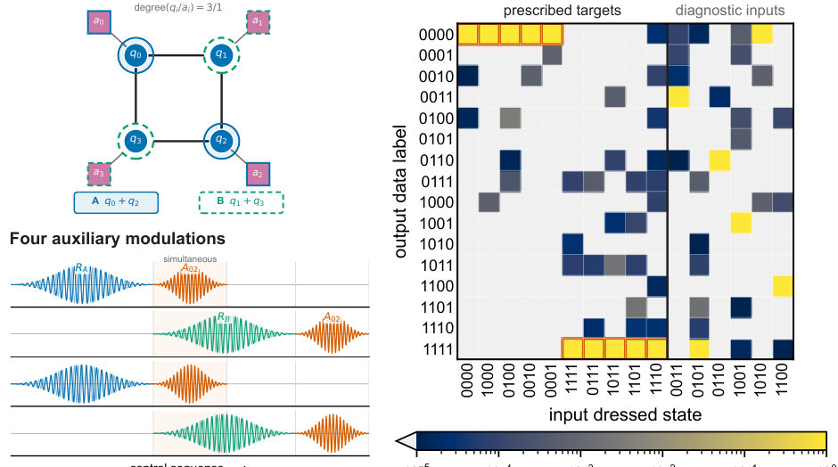
<figcaption class="paper-figure-caption"><b>Fig 2.</b> FIG. 3. Pipelined ring schedule and four-bit population transfer. a, The four-bit ring contains four data modes and one leaf auxiliary per data mode; the recovery rule groups nonadjacent targets as A = {q0, q2} and B = {q1, q3}. The dynamical model retains four levels for all eight modes. b, The fixed input-independent waveform pipelines the two recovery groups with their conditional auxiliary 0 ↔2 subpulses. Each auxiliary operation begins after the corresponding recovery operation, while nonconflicting operations overlap. c, Assigned-data populations after the composite waveform, with columns denoting inputs and rows output labels. All 16 inputs are propagated, but only the two codewords...</figcaption>
</figure>
<figure class="paper-figure-card">
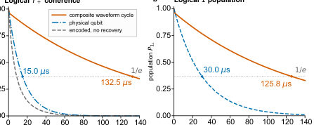
<figcaption class="paper-figure-caption"><b>Fig 3.</b> FIG. 4. Repeated-cycle protection under two noise models. a, Under dressed Pauli-X noise, recovery slows the decay of logical coherence CY relative to both a physical qubit and the unrecovered encoded state. b, Under independent amplitude damping, recovery slows the decay of logical-one population P1L relative to a physical excited state. Both panels use the same recovery cycle but different initial states and observables.</figcaption>
</figure>
</div>

<p><strong>Summary.</strong> This paper presents a method to implement Quantum Error Correction in superconducting transmon circuits using fixed, open-loop control pulses instead of traditional syndrome measurement and feedback. By compiling the recovery logic into a single waveform, the authors demonstrate protection against noise for a four-bit code ring, offering a scalable, hardware-efficient path toward fault-tolerant quantum computation.</p>
<p><strong>Why it may be interesting.</strong> It provides a concrete, hardware-native blueprint for implementing fault-tolerant quantum computation by replacing complex, time-consuming feedback loops with fixed, engineered control pulses.</p>
<details>
<summary>Detailed structure</summary>
<p><strong>Main problem.</strong> The paper addresses the overhead associated with traditional Quantum Error Correction (QEC) by developing a method to compile syndrome measurement and recovery into a fixed, open-loop control waveform.</p>
<p><strong>Main result.</strong> A local QEC rule can be compiled into a fixed, open-loop control cycle for transmon circuits, successfully slowing logical coherence decay and stabilizing logical populations for a four-bit repetition code ring.</p>
<p><strong>Method.</strong> The authors use spectral compilation, designing a composite waveform consisting of a swap operation and a conditional auxiliary transition to implement the recovery logic without real-time feedback.</p>
<p><strong>Model / system.</strong> The work is based on interacting transmon circuits, modeled as a four-site ring structure for a four-bit repetition code. The Hamiltonian and evolution are analyzed using time-dependent control pulses.</p>
<p><strong>Key observables.</strong> Logical coherence ($C_Y$) and logical-one population ($P_{1L}$) decay rates, and the population transfer map for all 16 computational-basis inputs.</p>
<p><strong>Important parameters / regimes.</strong> The system uses a fixed two-color scheduling for the ring update, and the cycle time is characterized by a $\mu$s scale.</p>
<p><strong>Assumptions / limitations.</strong> The residual error is assumed to be dominated by leakage due to spectral crowding, and the analysis focuses on the Z-basis rule, requiring further steps for phase-error correction.</p>
<p><strong>Figures summary.</strong> Figures illustrate the physical process of fixed open-loop control transferring error records, detail the local compilation waveform, show the two-color pipelined schedule for the ring, and plot the decay of logical coherence and population under noise.</p>
<p><strong>Paper structure.</strong> The paper develops models for local recovery subpulses, extends this to a full ring computation using a two-color schedule, and finally analyzes the performance of the resulting fixed waveform in a repeated-cycle error correction scheme.</p>
</details>
<details>
<summary>Abstract</summary>
<p>Quantum error correction commonly relies on syndrome measurement, decoding, and conditional feedback. We numerically show that the conditional spectrum of an interacting transmon circuit can compile a local recovery rule into a fixed open-loop control cycle. In a four-bit repetition-code ring, the resulting input-independent control slows the decay of logical coherence under Pauli-\(X\) noise and stabilizes logical-one population under data relaxation relative to uncorrected references. Its local, bounded-degree architecture provides a hardware-native framework for extending compiled recovery control to larger quantum networks.</p>
</details>
<p><sub><a href="#top">↑ back to top</a></sub></p>

<p><a id="paper-2609.17097"></a></p>
<h3 id="course-on-two-dimensional-quantum-gases"><a href="http://arxiv.org/abs/2609.17097v1">Course on two-dimensional quantum gases</a></h3>
<p><strong>Authors:</strong> Hélène Perrin<br>
<strong>Type:</strong> theory · <strong>Category:</strong> quantum gases · <strong>PDF:</strong> <a href="https://arxiv.org/pdf/2609.17097v1">https://arxiv.org/pdf/2609.17097v1</a><br>
<strong>Analysis basis:</strong> full PDF text, analyzed in chunks
<strong>Topic relevance:</strong> <code>analog quantum simulation</code> <strong>3/5</strong> · <code>Keldysh / 2PI / non-Gaussian methods</code> <strong>2/5</strong> · <code>methods for driven-dissipative</code> <strong>1/5</strong></p>
<div class="figure-strip-hint">↔ Scroll figures horizontally</div>
<div class="paper-figures-scroll">
<figure class="paper-figure-card">
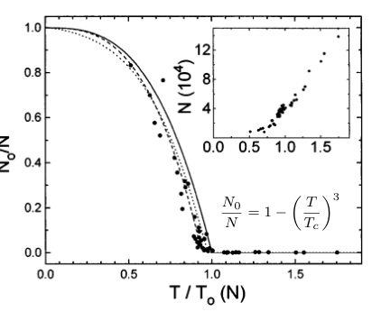
<figcaption class="paper-figure-caption"><b>Fig 1.</b> Figure 1.1: Left: First observation of Bose-Einstein condensation in atomic gases. Rubid- ium atoms initially confined in a harmonic trap are released in a time-of-flight experiment. The gas expands, and the density distribution (integrated along the imaging axis) after expansion is linked to the initial momentum distribution. Figure from Cornell’s group. Right: Condensed fraction as a function of temperature in units of the predicted critical temperature T0 for a non interacting gas, compared with the prediction for a non interact- ing gas. BEC occurs at a temperature slightly lower than predicted by the non interacting model. Inset: remaining atoms as a function of T/T0. Figure adapted...</figcaption>
</figure>
<figure class="paper-figure-card">
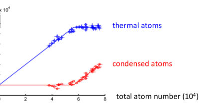
<figcaption class="paper-figure-caption"><b>Fig 2.</b> Figure 1.2: Left: Observation of BEC for a 3D Bose gas confined in a box trap. Figure from Ref. [10]. Upper panel: momentum distribution as observed after a 50 ms time-of- flight expansion. Lower panel: cut in the momentum distribution. Inset: in situ distribu- tion before expansion. Right: Saturation of the number of atoms in the excited states in this situation. Figure from Ref. [2], adapted from a figure provided by Zoran Hadzibabi´c.</figcaption>
</figure>
<figure class="paper-figure-card">
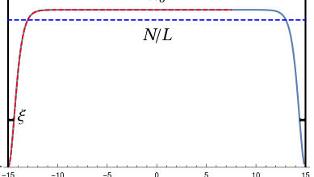
<figcaption class="paper-figure-caption"><b>Fig 3.</b> Figure 1.3: Left: Solution of Gross-Pitaevskii equation for a condensante in a harmonic trap (full blue line), compared to the Thomas-Fermi profile (dashed magenta, very well superposed except on the edges) and the non interacting solution (dashed cyan). Also shown are the trapping potential (dashed red) and the chemical potential (dashed black). Right: Same thing in a box potential. The density is uniform, except in a small region of size ξ near the edge.</figcaption>
</figure>
<figure class="paper-figure-card">
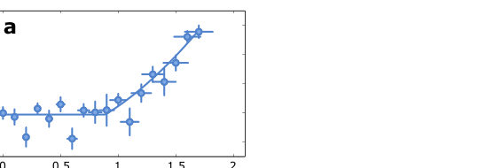
<figcaption class="paper-figure-caption"><b>Fig 4.</b> Figure 1.5: Demonstration of a critical velocity in a 2D gas. Left: A focused laser is stirred around the gas, at some fixed distance from the center, and at a fixed linear speed v. Right: The energy transferred to the gas is measured in a time-of-flight experiment. At low v, no energy is transferred. Above a critical value vc, the energy increases quadratically with v −vc, due to the creation of excited particle out of the BEC. Figure from Ref. [15].</figcaption>
</figure>
<figure class="paper-figure-card">
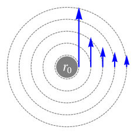
<figcaption class="paper-figure-caption"><b>Fig 5.</b> Figure 1.6: Left: Circulation of the velocity field around a contour C. The integration is done on a path where the velocity is well-defined, while there may be points inside the contour, here point O, where the density vanishes and the velocity is not defined, which may be a vortex of charge q. The circulation is an integer number of h/M, qh/M in this latter case. Right: Typical velocity field around a vortex. The central region of radius r0 ∼ξ is depleted and the density vanishes in the center of the core.</figcaption>
</figure>
</div>

<p><strong>Summary.</strong> This course material provides a detailed theoretical review of quantum gases, covering the transition to BEC in trapped systems using the Gross-Pitaevskii equation. It emphasizes the unique physics of two-dimensional gases, deriving the Berezinskii-Kosterlitz-Thouless mechanism and analyzing the resulting quasi long-range order through correlation functions.</p>
<p><strong>Why it may be interesting.</strong> This work provides a comprehensive theoretical treatment of dimensionality effects on superfluidity, which is a cornerstone topic in modern AMO physics, bridging mean-field descriptions with fluctuation-dominated regimes.</p>
<details>
<summary>Detailed structure</summary>
<p><strong>Main problem.</strong> The paper addresses the fundamental physics of Bose-Einstein Condensation (BEC) and superfluidity in quantum gases, with a specific focus on the unique behavior observed in two-dimensional (2D) systems.</p>
<p><strong>Main result.</strong> It establishes quantitative criteria for BEC based on the density of states and derives the governing Gross-Pitaevskii Equation (GPE) for the condensate wavefunction. Furthermore, it details the quasi long-range order characteristic of 2D superfluids via the Berezinskii-Kosterlitz-Thouless (BKT) mechanism.</p>
<p><strong>Method.</strong> The analysis employs a combination of mean-field theory (GPE derivation), semi-classical approximations for thermodynamic quantities, and linear response theory/Bogoliubov approach for analyzing phase fluctuations.</p>
<p><strong>Model / system.</strong> The primary system is a weakly interacting Bose gas, modeled in various dimensionalities (3D, 2D, quasi-2D) confined by isotropic power-law traps. The interactions are modeled via an effective contact potential, leading to the GPE.</p>
<p><strong>Key observables.</strong> Condensate fraction ($N_0/N$), first-order correlation function ($G_1(r)$), critical temperature ($T_c$), and the superfluid order parameter.</p>
<p><strong>Important parameters / regimes.</strong> Dimensionality ($D$), trap exponent ($\alpha$), interaction strength ($g$), and temperature ($T$).</p>
<p><strong>Assumptions / limitations.</strong> Key approximations include the semi-classical limit for thermodynamics and the assumption that density fluctuations are negligible when analyzing phase correlations in 2D.</p>
<p><strong>Figures summary.</strong> The notes reference figures showing the BEC fraction dependence on temperature for different trap geometries and the decay of the correlation function $G_1(r)$ in 2D systems.</p>
<p><strong>Paper structure.</strong> The content is structured logically, moving from the general theory of BEC in trapped gases (ideal gas, interactions, GPE) to the specific, advanced topic of 2D systems, culminating in the analysis of phase fluctuations and the BKT transition.</p>
</details>
<details>
<summary>Abstract</summary>
<p>This course on two-dimensional quantum gases, prepared for the S{ã}o Paulo ICTP-SAIFR IVth School on Light and Cold Atoms, is organized into three lectures. The first introductory lecture addresses Bose-Einstein condensation in an ideal gas, the effect of interactions in the weakly interacting limit, Gross-Pitaevskii equation and its hydrodynamic formulation, as well as superfluidity. The second lecture is devoted to the main features of two-dimensional quantum gases: importance of the interactions, enhanced phase fluctuations and the emergence of a quasi long-range order, superfluidity through the Berezinskii-Kosterlitz-Thouless mechanism, scaling symmetry. The third lecture has taken the form of a seminar on fast rotating quasi two-dimensional Bose gases and thermal melting of the vortex lattice. The slides accompanying these notes can be found on the school website: https://www.ictp-saifr.org/slca2025/.</p>
</details>
<p><sub><a href="#top">↑ back to top</a></sub></p>

<p><a id="paper-2609.16825"></a></p>
<h3 id="orbital-angular-momentum-partition-in-hydrogen-photoionization-by-a-monochromatic-vortex-beam"><a href="http://arxiv.org/abs/2609.16825v1">Orbital-angular-momentum partition in hydrogen photoionization by a monochromatic vortex beam</a></h3>
<p><strong>Authors:</strong> Zhongchen Xing, Chengyin Wu, Zheng Li, Marcelo F. Ciappina<br>
<strong>Type:</strong> theory · <strong>Category:</strong> other · <strong>PDF:</strong> <a href="https://arxiv.org/pdf/2609.16825v1">https://arxiv.org/pdf/2609.16825v1</a><br>
<strong>Analysis basis:</strong> full PDF text, analyzed in chunks
<strong>Topic relevance:</strong> <code>interference shaping light</code> <strong>3/5</strong> · <code>Keldysh / 2PI / non-Gaussian methods</code> <strong>1/5</strong> · <code>methods for driven-dissipative</code> <strong>1/5</strong> · <code>quantum measurements</code> <strong>1/5</strong></p>
<div class="figure-strip-hint">↔ Scroll figures horizontally</div>
<div class="paper-figures-scroll">
<figure class="paper-figure-card">
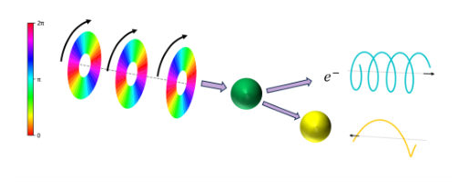
<figcaption class="paper-figure-caption"><b>Fig 1.</b> FIG. 1: Schematic of the photoionization process driven by vortex light. Upon ionization of the atom (green sphere), both the photoelectron and the recoiling ion (yellow sphere) acquire OAM along the z-direction from the incident photon. As shown in the later discussion, the photoelectron can carry OAM exceeding the photon’s total angular momentum, while the ion acquires oppositely directed OAM, preserving the total angular momentum of the system.</figcaption>
</figure>
<figure class="paper-figure-card">
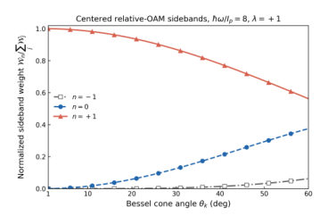
<figcaption class="paper-figure-caption"><b>Fig 2.</b> FIG. 2: Leading sideband weights as a function of θk. As θk increases, the weight of the dominant n = 1 channel is progressively redistributed to the n = 0 and n = −1 channels. The photon helicity is fixed at λ = +1.</figcaption>
</figure>
<figure class="paper-figure-card">
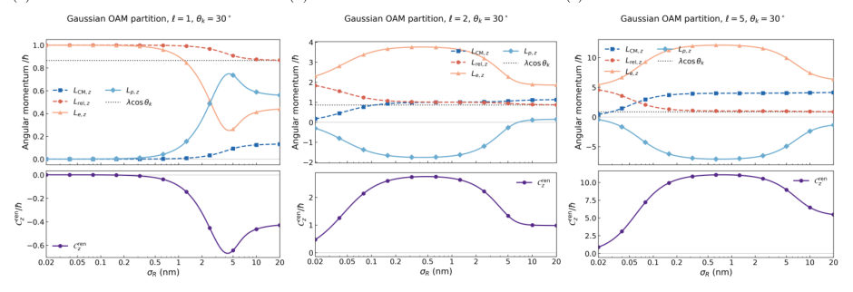
<figcaption class="paper-figure-caption"><b>Fig 3.</b> FIG. 3: The average value of the relative OAM, the CM’s OAM, the electron’s OAM, the proton’s OAM, and the correlated angular momentum operator as functions of the spatial uncertainty σR. The total angular momentum indices are chosen as ℓ= 1, 2, 5 and the cone angle is chosen as θk = 30◦. Other settings are the same as Fig. 2.</figcaption>
</figure>
</div>

<p><strong>Summary.</strong> This theoretical study analyzes the transfer of orbital angular momentum from a vortex laser beam to a hydrogen atom during photoionization. By developing a center-of-mass-resolved theory, the authors demonstrate that ignoring atomic recoil leads to incorrect predictions for the electron's OAM. They show that the OAM is largely transferred to the recoiling center-of-mass motion, making recoil a key element in understanding this quantum process.</p>
<p><strong>Why it may be interesting.</strong> This work provides a rigorous quantum mechanical treatment of light-matter interaction where recoil effects are non-trivial, which is highly relevant for understanding quantum control and momentum transfer in strong-field atomic physics.</p>
<details>
<summary>Detailed structure</summary>
<p><strong>Main problem.</strong> The paper investigates how the orbital angular momentum (OAM) carried by a monochromatic vortex beam is transferred to the matter (hydrogen atom) during photoionization, specifically accounting for the crucial role of atomic recoil and translational motion.</p>
<p><strong>Main result.</strong> The transfer of OAM is highly dependent on the initial state of the atomic center-of-mass (CM); in the small-transverse-retardation regime, OAM is predominantly transferred to the CM motion (the proton), not solely to the electron.</p>
<p><strong>Method.</strong> The authors developed a center-of-mass-resolved quantum theory, analyzing the photoionization process using the full Hamiltonian that explicitly includes CM motion, and comparing results across different initial CM state approximations.</p>
<p><strong>Model / system.</strong> The system is the photoionization of a hydrogen-like atom by a monochromatic Laguerre-Gaussian (vortex) beam. The model uses a Hamiltonian incorporating the free evolution of the atom's CM motion and the light-matter interaction in the velocity gauge.</p>
<p><strong>Key observables.</strong> Photoelectron angular distribution, OAM content ($\langle L_{e,z} 
angle$, $\langle L_{p,z} 
angle$), and the correlation term between electron and proton angular momenta.</p>
<p><strong>Important parameters / regimes.</strong> The degree of initial CM momentum definition (momentum eigenstate vs. spatially localized wavepacket) and the transverse retardation scale.</p>
<p><strong>Assumptions / limitations.</strong> The analysis relies on the strong-field approximation (SFA) and treats the light-ion interaction as negligible compared to the electron-light interaction.</p>
<p><strong>Paper structure.</strong> The paper builds from the general Hamiltonian to specific theoretical treatments, contrasting idealized fixed-target models with the full CM-resolved theory to derive the correct OAM partitioning.</p>
</details>
<details>
<summary>Abstract</summary>
<p>Understanding how optical orbital angular momentum (OAM) is transferred to matter requires treating recoil and translational motion alongside the internal electronic dynamics. We develop a center-of-mass-resolved theory of one-photon ionization of hydrogen by a monochromatic Laguerre--Gaussian beam and show that the Bessel-vortex photoelectron predicted in fixed-target models is a preparation-dependent limit. For a sharply defined atomic center-of-mass momentum, the recoil records the photon-cone azimuth, and tracing over it generally destroys the coherence required for a pure electron vortex. In the small-transverse-retardation regime, the optical OAM is transferred predominantly to the center-of-mass motion and hence, in the laboratory frame, to the proton. Finite-retardation corrections redistribute angular momentum between center-of-mass and relative motion, while an additional correlation contribution to the electron and proton angular momenta can be tuned through the spatial uncertainty of the atomic center of mass. These results reveal atomic recoil as a key element of OAM transfer in photoionization.</p>
</details>
<p><sub><a href="#top">↑ back to top</a></sub></p>

<p><a id="paper-2609.17500"></a></p>
<h3 id="visualizing-berry-curvature-in-a-floquet-chern-insulator"><a href="http://arxiv.org/abs/2609.17500v1">Visualizing Berry curvature in a Floquet-Chern insulator</a></h3>
<p><strong>Authors:</strong> Younsik Kim, Rishi Acharya, Hannah E. Aguirre, Lucca Figari, Daniel P. Shoemaker, Fahad Mahmood<br>
<strong>Type:</strong> experiment · <strong>Category:</strong> other · <strong>PDF:</strong> <a href="https://arxiv.org/pdf/2609.17500v1">https://arxiv.org/pdf/2609.17500v1</a><br>
<strong>Analysis basis:</strong> full PDF text, analyzed in chunks
<strong>Topic relevance:</strong> <code>quantum measurements</code> <strong>3/5</strong> · <code>driven-dissipative phase transition</code> <strong>1/5</strong> · <code>non-equilibrium universality</code> <strong>1/5</strong> · <code>quantum optics experiment</code> <strong>1/5</strong></p>
<div class="figure-strip-hint">↔ Scroll figures horizontally</div>
<div class="paper-figures-scroll">
<figure class="paper-figure-card">
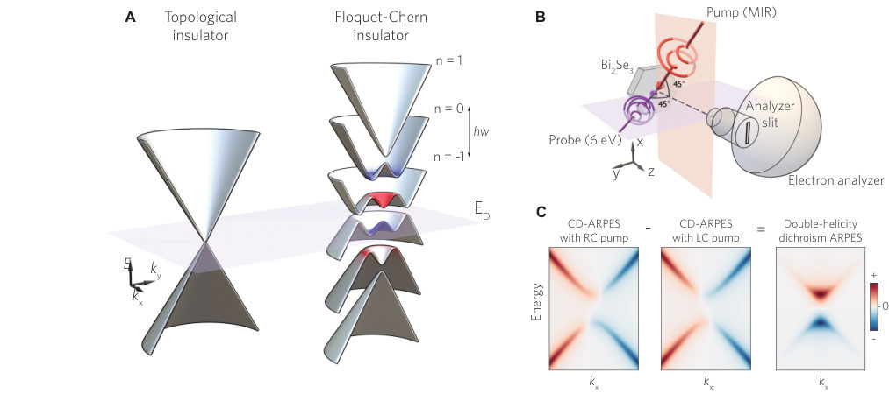
<figcaption class="paper-figure-caption"><b>Fig 1.</b> FIG. 1. Experimental schematic and double-helicity dichroism ARPES. (A) Schematic representation of a topological insulator and a Floquet-Chern insulator. Red and blue shading indicates the intensity of the induced Berry curvature. (B) Schematic of the time-resolved ARPES setup. (C) Conceptual illustration of circular dichroism angle-resolved photoemission spectroscopy (ARPES) spectra and corresponding double-helicity dichroism signal near the Dirac point of a Floquet-Chern insulator.</figcaption>
</figure>
<figure class="paper-figure-card">
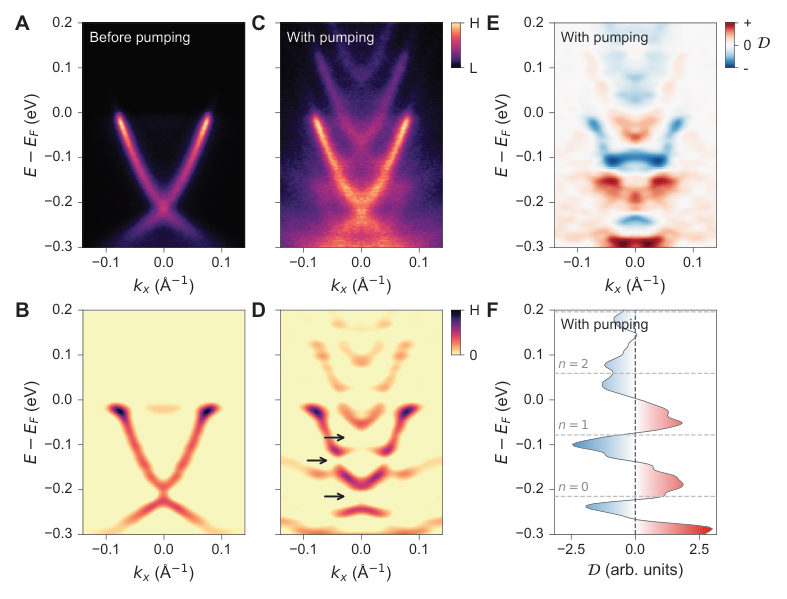
<figcaption class="paper-figure-caption"><b>Fig 2.</b> FIG. 2. Floquet-induced gaps and double-helicity dichroism in a Floquet-Chern insulator. (A and C) Time- resolved ARPES (Tr-ARPES) spectra of Bi2Se3 acquired with a circularly polarized pump before pump arrival and at pump- probe temporal overlap, respectively. The pump fluence was 2.0 mJ/cm2. (B and D) Corresponding two-dimensional curvature maps. Black arrows in (D) indicate the Floquet-induced gaps. (E) Double-helicity dichroism spectrum corresponding to (C) (see Supplementary Materials [1] for the details of the double-helicity dichroism). (F) Energy distribution curve (EDC) of the double helicity dichroism spectrum, extracted from (E) at kx = 0.</figcaption>
</figure>
<figure class="paper-figure-card">
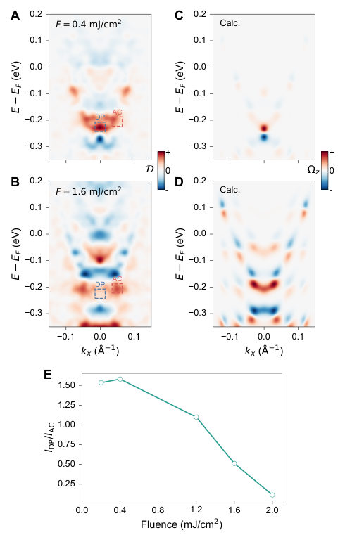
<figcaption class="paper-figure-caption"><b>Fig 3.</b> FIG. 3. Fluence dependence of double-helicity dichro- ism and calculated Berry curvature. (A and B) Double- helicity dichroism spectra measured at pump fluences of 0.4 and 1.6 mJ/cm2, respectively. The dashed boxes labeled DP and AC indicate the regions used to evaluate the mean dichro- ism signals near the Dirac point and avoided crossing, respec- tively. (C and D) Calculated z-component Berry curvature distributions for peak drive fields of 1.6 × 107 V/m (corre- sponding to Floquet parameter β ≈0.13) and 3.2 × 107 V/m (β ≈0.26), respectively. (E) Ratio of the mean dichroism signals in the DP and AC regions, IDP/IAC, as a function of pump fluence.</figcaption>
</figure>
<figure class="paper-figure-card">
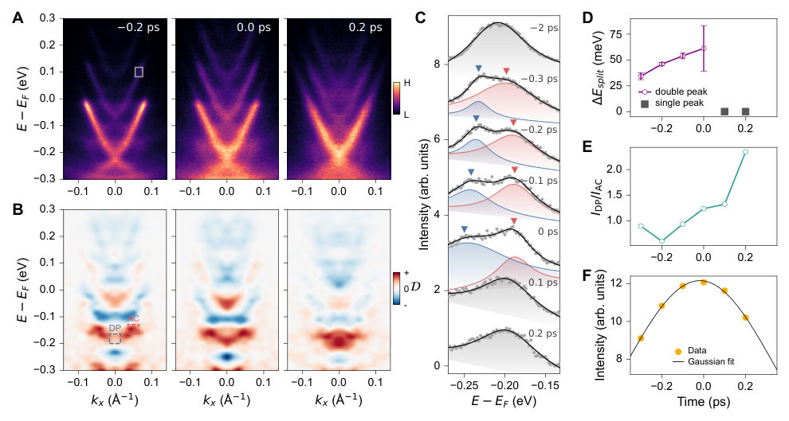
<figcaption class="paper-figure-caption"><b>Fig 4.</b> FIG. 4. Temporal evolution of the Floquet-induced gap and double-helicity dichroism. (A) Tr-ARPES spectra as a function of time delay. (B) Corresponding double-helicity dichroism of A. Plots in B share the same color scale. (C) Energy distribution curves for Tr-ARPES spectra as a function of time near kx = 0. Grey shading indicates a single Lorentzian fit with a linear background, while red and blue shadings indicate a double Lorentzian fit. Red and blue triangles represent the peak positions for the double Lorentzian fit. (D) Peak separations as a function of time derived from the fits shown in C. Data points representing a single peak are plotted at zero separation. Error bars indicate...</figcaption>
</figure>
</div>

<p><strong>Summary.</strong> This work uses time- and angle-resolved photoemission spectroscopy ($  ext{Tr-ARPES}$) to directly map the Berry curvature in a Floquet-Chern insulator on $   ext{Bi}_2   ext{Se}_3$. By exploiting the double-helicity dichroism signal, the authors demonstrate that the geometric response is sensitive to the driving field and evolves differently in time compared to the spectral replica intensity. This establishes a powerful experimental technique for probing light-induced topological properties.</p>
<p><strong>Why it may be interesting.</strong> The technique provides a direct, momentum-resolved probe of Berry curvature induced by time-periodic driving, which is crucial for understanding light-matter interactions in topological materials and Floquet engineering.</p>
<details>
<summary>Detailed structure</summary>
<p><strong>Main problem.</strong> The primary goal is to directly measure and map the light-induced Berry curvature in a Floquet-Chern insulator state.</p>
<p><strong>Main result.</strong> The study successfully mapped the Berry curvature using double-helicity dichroism, showing its systematic evolution with pump strength and distinguishing the driven topological state from static bands.</p>
<p><strong>Method.</strong> The measurement relies on circular-dichroism time- and angle-resolved photoemission spectroscopy (Tr-ARPES) by comparing spectra taken with opposite pump helicities to isolate the geometric response.</p>
<p><strong>Model / system.</strong> The system is the surface of $  ext{Bi}_2   ext{Se}_3$, driven by mid-infrared circularly polarized light, which opens a topological gap and creates a Floquet-Chern insulator.</p>
<p><strong>Key observables.</strong> Double-helicity dichroism signal, Berry curvature distribution ($\Omega$), Floquet-Bloch states, and the time-dependent gap splitting ($\Delta E_{split}$).</p>
<p><strong>Important parameters / regimes.</strong> Pump photon energy ($\hbar\omega$), pump field strength (fluence), and time delay ($\Delta t$).</p>
<p><strong>Assumptions / limitations.</strong> The double-helicity dichroism method is assumed to isolate the pump-induced Berry curvature, and the temporal asymmetry is attributed to electronic heating and dephasing.</p>
<p><strong>Figures summary.</strong> Figures illustrate the setup, 2D curvature maps showing alternating-sign features, fluence dependence of dichroism, and temporal evolution showing strong asymmetry in the Berry curvature versus the replica intensity.</p>
<p><strong>Paper structure.</strong> The paper progresses from establishing the need for direct Berry curvature measurement to detailing the $  ext{Tr-ARPES}$ methodology, presenting results on periodicity and field dependence, and finally analyzing the time-resolved asymmetry between geometric response and spectral weight.</p>
</details>
<details>
<summary>Abstract</summary>
<p>Circularly polarized light can open a topological gap in a gapless Dirac system, creating a Floquet-Chern insulator. However, its Berry curvature has not been directly resolved. Here we use circular-dichroism time- and angle-resolved photoemission spectroscopy (Tr-ARPES) to map the light-induced Berry curvature of Floquet-Bloch states on the surface of Bi$_2$Se$_3$. By comparing spectra for opposite helicities of the mid-infrared pump, we isolate the induced geometric response. We observe alternating-sign Berry-curvature features at Floquet gaps that repeat at intervals set by the pump photon energy and redistribute with pump field strength in agreement with calculations for a periodically driven Dirac Hamiltonian. Both the induced Berry-curvature and the Floquet Dirac gap decay faster than the replica intensity, showing that spectral replicas can persist even after coherent Floquet hybridization weakens. These results establish momentum-resolved Berry-curvature mapping as a direct probe of light-induced topology and coherent Floquet band formation.</p>
</details>
<p><sub><a href="#top">↑ back to top</a></sub></p>

<p><a id="paper-2609.16488"></a></p>
<h3 id="error-bounded-fixed-point-design-of-super-sample-rate-iir-filters-for-real-time-superconducting-qubit-flux-predistortion"><a href="http://arxiv.org/abs/2609.16488v1">Error-Bounded Fixed-Point Design of Super-Sample-Rate IIR Filters for Real-Time Superconducting Qubit Flux Predistortion</a></h3>
<p><strong>Authors:</strong> Matt Huszabianlou, Angelos Ioannou, Nirmalendu Bikash Patra, Anastasiia Butko, Gang Huang, Irfan Siddiqi<br>
<strong>Type:</strong> theory · <strong>Category:</strong> quantum information and computing · <strong>PDF:</strong> <a href="https://arxiv.org/pdf/2609.16488v1">https://arxiv.org/pdf/2609.16488v1</a><br>
<strong>Analysis basis:</strong> full PDF text, analyzed in chunks
<strong>Topic relevance:</strong> <code>QC/QI experiment</code> <strong>3/5</strong> · <code>quantum measurements</code> <strong>1/5</strong></p>
<div class="figure-strip-hint">↔ Scroll figures horizontally</div>
<div class="paper-figures-scroll">
<figure class="paper-figure-card">
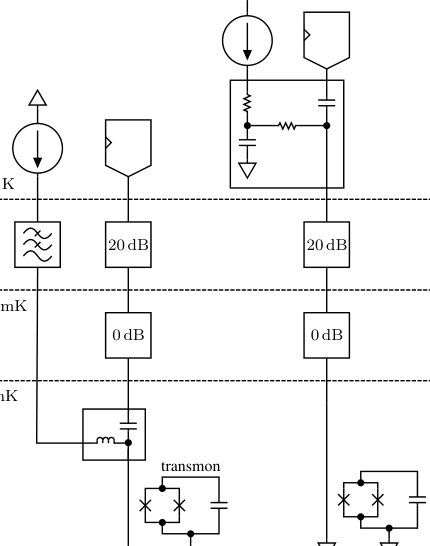
<figcaption class="paper-figure-caption"><b>Fig 1.</b> Fig. 1: Typical configurations of qubit and coupler flux tuning lines. Two common variants include (left) an inductive bias tee in the mixing chamber [7] and (right) a resistive bias tee at room temperature [5].</figcaption>
</figure>
<figure class="paper-figure-card">
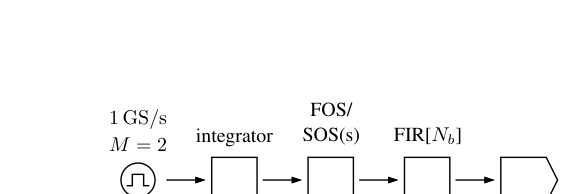
<figcaption class="paper-figure-caption"><b>Fig 2.</b> Fig. 2: Filter cascade comprising an integrator, one or more first- or second-order sections, and an FIR of Nb taps.</figcaption>
</figure>
<figure class="paper-figure-card">
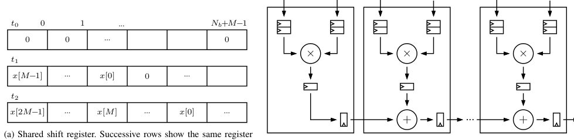
<figcaption class="paper-figure-caption"><b>Fig 3.</b> Fig. 3: Realization of the M-parallel FIR. sr[k] indicates position k of the portion of the shift register seen by the dot product. The boundary boxes indicate DSP48E2 elements. The external registers are inferred by Vivado as Shift Register Logic (SRL) to save FPGA area.</figcaption>
</figure>
<figure class="paper-figure-card">
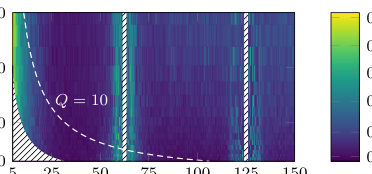
<figcaption class="paper-figure-caption"><b>Fig 4.</b> Fig. 5: Simulated peak step response error of the damped oscillation correction at the formats of Table I, for a step of 0.5 of full scale, worst case over ϕ at αr = ±0.05, on a logarithmic color scale. Hatching marks the region excluded by Q ≥3 and the 1.0 MHz guard bands on either side of θp = mπ/J and (θ + θp)/2 = mπ/J. θp depends on the residue, which is not represented, so the bands are drawn at θp = θ; the exclusion must be tested against the fit’s θp. Outside the hatched region and below the dashed Q = 10 contour, the whole of |αr| ≤0.05 is correctable at every ϕ; above the contour the least favorable ϕ permits |αr| ≈1/(2Q).</figcaption>
</figure>
<figure class="paper-figure-card">
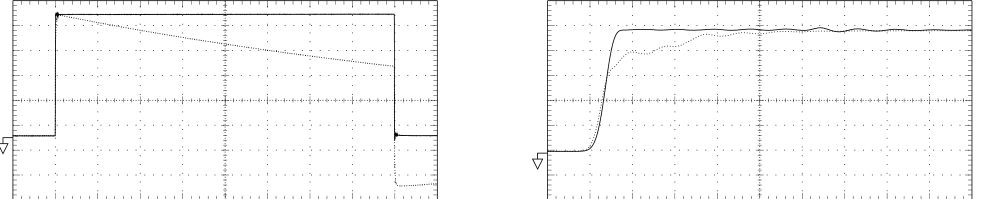
<figcaption class="paper-figure-caption"><b>Fig 5.</b> Fig. 6: Oscilloscope captures of an 8 µs Gaussian-edged pulse through a YQ-CBT12-1G bias tee at room temperature, uncorrected (dotted) and corrected (solid) by the FPGA filters. (a) shows the full record and (b) the rising edge, with a corrected 10% to 90% rise time of 4.2 ns. The filters were calibrated on a square step and evaluated on the filtered edge. Relative to the mean corrected pulse top, the RMS (peak) deviation over 3 ns to 30 ns after the edge (50% crossing) is 13.8% (27%) uncorrected and 0.31% (1.7%) corrected, and over 30 ns to 7.9 µs it is 26% (42%) and 0.09% (1.7%).</figcaption>
</figure>
</div>

<p><strong>Summary.</strong> This paper details the design and hardware implementation of digital filters necessary to correct signal distortion in superconducting qubit flux control lines. By performing rigorous error-bounded fixed-point analysis, the authors ensure that quantization noise does not destabilize the compensation filters. The resulting super-sample-rate architecture allows for high-fidelity, real-time operation at speeds required for advanced quantum gate operations.</p>
<p><strong>Why it may be interesting.</strong> This work provides crucial, hardware-aware engineering details for implementing quantum control pulses, directly impacting the fidelity and scalability of superconducting quantum computation platforms.</p>
<details>
<summary>Detailed structure</summary>
<p><strong>Main problem.</strong> The paper addresses the need to correct line distortion in flux-activated two-qubit gates within superconducting quantum processors to mitigate errors like detuning and leakage.</p>
<p><strong>Main result.</strong> The authors derive error-bounded fixed-point designs and successfully implement the required IIR/FIR filter cascade on a high-speed FPGA platform using a super-sample-rate structure.</p>
<p><strong>Method.</strong> The methodology involves deriving coefficient formats based on step response error tolerance and performing a detailed analysis of quantization effects on filter stability and pole/zero locations.</p>
<p><strong>Model / system.</strong> The system is a superconducting quantum processor utilizing transmon qubits whose flux tunability is controlled via bias tees. The signal processing is modeled using linear time-invariant (LTI) systems requiring digital IIR/FIR compensation filters.</p>
<p><strong>Key observables.</strong> Residual detuning, conditional-phase error, leakage, and the maximum frequency error bound ($\lVert E 
Vert_\infty$).</p>
<p><strong>Important parameters / regimes.</strong> Clock rate of 500 MHz, super-sample rate structure, DSP slice consumption (88 DSP slices for a representative cascade).</p>
<p><strong>Assumptions / limitations.</strong> The analysis relies on bounding quantization-induced displacement of poles and zeros, and assumes the flux tuning line can be modeled as an LTI system.</p>
<p><strong>Figures summary.</strong> Figures illustrate typical qubit flux tuning line configurations and the detailed cascade structure of the required digital filter (Integrator $
ightarrow$ FOS/SOS $
ightarrow$ FIR).</p>
<p><strong>Paper structure.</strong> The paper systematically moves from identifying the physical distortion problem to deriving the required digital filter structure, analyzing stability and quantization error bounds for specific filter types (Droop, Oscillation), and finally detailing the high-speed hardware implementation.</p>
</details>
<details>
<summary>Abstract</summary>
<p>Flux-activated two-qubit gates in superconducting processors require correction of line distortion, which otherwise produces residual detuning, conditional-phase error, and leakage. Prior demonstrations of cryoscope-based distortion calibration have generally used commercial solutions that specify the filter models but not their FPGA implementation. These details matter for custom and open-source systems, where the fixed-point coefficient and datapath formats set how accurately the correction is realized, and the IIR feedback loop in its standard form does not meet timing at the required clock rate. We derive the coefficient formats of the correction filters from a step response error tolerance, using bounds on the quantization-induced displacement of the poles and zeros over the physical parameter range of each distortion, and the accumulator format from the smallest input change that must remain resolvable at the output. The same analysis gives the conditions under which quantization preserves filter stability. We implement the resulting FIR/IIR cascade on the QubiC platform at a fabric clock rate of \SI{500}{MHz}, using a super-sample-rate structure with scattered look-ahead pipelining, which removes the feedback recursion from the critical path without changing the target transfer function. A representative cascade for our \SI{1}{GS/s} flux lines, comprising an integrator, a second-order section, and a 20-tap FIR, consumes 88 DSP slices and adds \SI{162}{ns} of latency. We confirm the hardware implementation by correcting characteristic bias-tee distortion, an intermediate step toward full cryoscope-based calibration.</p>
</details>
<p><sub><a href="#top">↑ back to top</a></sub></p>

<p><a id="paper-2609.17482"></a></p>
<h3 id="predictive-structure-behind-rare-outcomes-in-random-quantum-circuits"><a href="http://arxiv.org/abs/2609.17482v1">Predictive Structure Behind Rare Outcomes in Random Quantum Circuits</a></h3>
<p><strong>Authors:</strong> Myeongsu Kim, Travis Humble, Sabre Kais<br>
<strong>Type:</strong> theory · <strong>Category:</strong> quantum information and computing · <strong>PDF:</strong> <a href="https://arxiv.org/pdf/2609.17482v1">https://arxiv.org/pdf/2609.17482v1</a><br>
<strong>Analysis basis:</strong> full PDF text, analyzed in chunks
<strong>Topic relevance:</strong> <code>quantum measurements</code> <strong>3/5</strong> · <code>Full counting statistics</code> <strong>1/5</strong></p>
<div class="figure-strip-hint">↔ Scroll figures horizontally</div>
<div class="paper-figures-scroll">
<figure class="paper-figure-card">
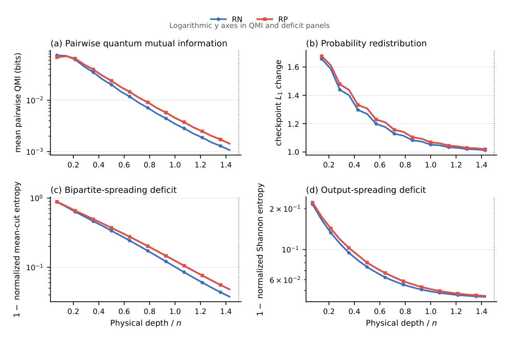
<figcaption class="paper-figure-caption"><b>Fig 1.</b> FIG. 1. Peak-conditioned circuits separate from their parent ensemble throughout the pre-output trajectory. Cohort means and circuit-bootstrap 95% intervals are shown for 1000 RN and 1000 RP circuits at n = 14. The horizontal coordinate is physical depth divided by n. The dotted line marks the total depth L/n = 1.5; the terminal checkpoint itself is excluded. Panels show (a) all-pair quantum mutual information, (b) full-distribution L1 redistribution, (c) normalized cut-entanglement deficit, and (d) normalized output-entropy deficit. Panels (a), (c), and (d) use logarithmic axes.</figcaption>
</figure>
<figure class="paper-figure-card">
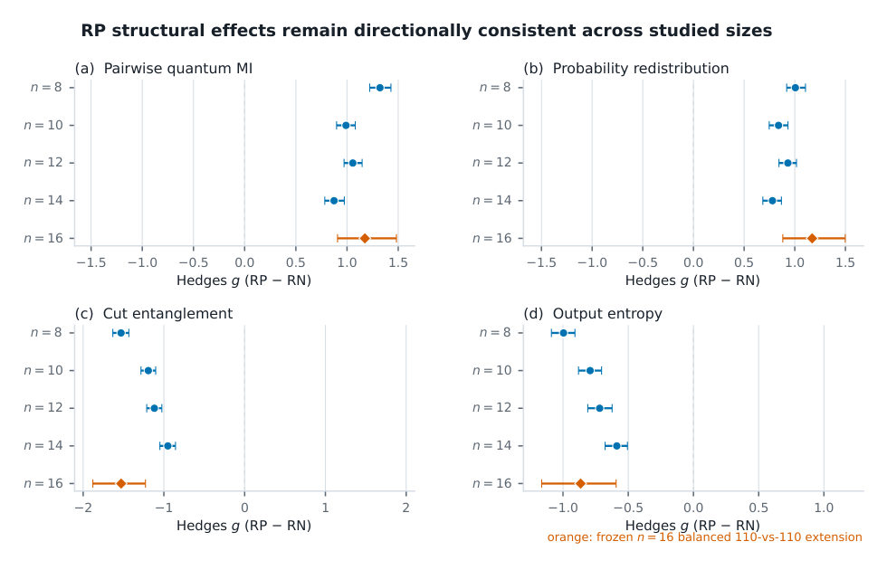
<figcaption class="paper-figure-caption"><b>Fig 2.</b> FIG. 2. The RN–RP structural signature persists across the tested sizes. Hedges-g effects and 95% ensemble-stratified circuit-bootstrap intervals are shown for the four trajectory endpoints. Blue points denote n = 8–14 core cohorts and orange points the frozen 110-RN/110-RP extension at n = 16. The effects retain their directions but are not monotone in n, supporting finite-size transport rather than an asymptotic scaling claim.</figcaption>
</figure>
<figure class="paper-figure-card">
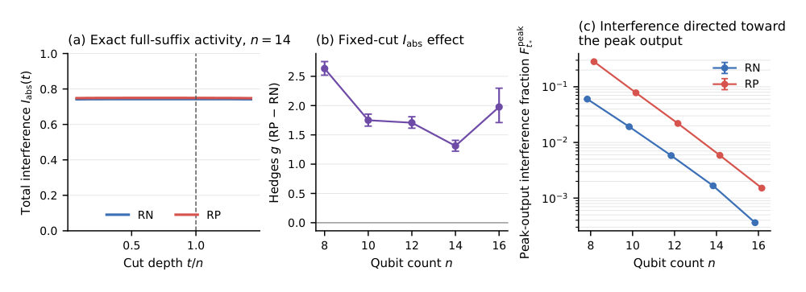
<figcaption class="paper-figure-caption"><b>Fig 3.</b> FIG. 3. RP trajectories exhibit greater and more peak-directed quantum interference. (a) A representative exact full-suffix Iabs(t) trajectory at n = 14, shown for visual clarity, with lines denoting cohort means and bands circuit-bootstrap 95% intervals. The dashed line marks the fixed analysis cut t∗/n = 1. (b) Fixed-cut Hedges effects for Iabs across n = 8–16. (c) Circuit-level signed peak-output interference fraction F peak t∗ on a logarithmic axis. The peak output is defined retrospectively from each coherent final distribution.</figcaption>
</figure>
<figure class="paper-figure-card">
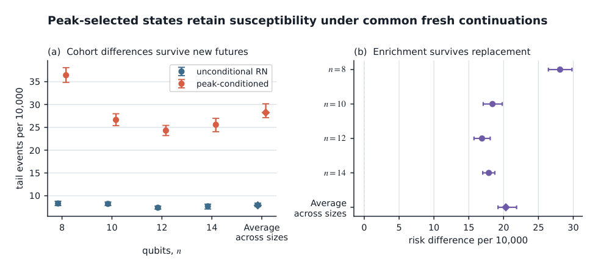
<figcaption class="paper-figure-caption"><b>Fig 4.</b> FIG. 4. Peak-selected states retain enhanced susceptibility after continuation replacement. Original continuations are discarded before RN and RP receive common fresh banks, evaluated at the calibrated thresholds γn in Table III. (a) Event probabilities remain separated. (b) Risk differences are positive at every size and after equal weighting across n = 8, 10, 12, 14. All displayed intervals are 95% intervals obtained by resampling the state and continuation axes while preserving shared-bank pairing.</figcaption>
</figure>
<figure class="paper-figure-card">
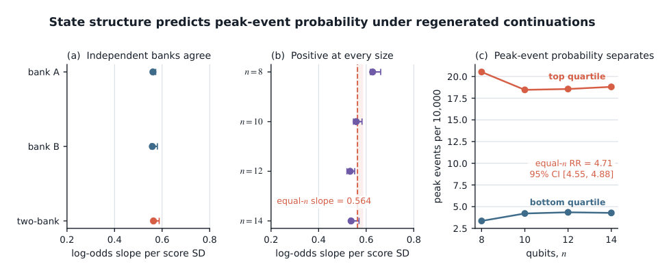
<figcaption class="paper-figure-caption"><b>Fig 5.</b> FIG. 5. Intermediate-state structure predicts peak probability under regenerated continuations. The unconditional cohorts at n = 8, 10, 12, 14 are evaluated at the calibrated thresholds γn in Table III. (a) Independently drawn shared banks give concordant frozen prefix-score slopes. (b) The slope is positive at every core size, with the across-size estimate (equal weight per size) shown by the dashed line and band. (c) Fresh-continuation event probabilities separate the upper and lower score quartiles. All displayed intervals are 95% intervals obtained by resampling the state and continuation axes while preserving shared-bank pairing.</figcaption>
</figure>
</div>

<p><strong>Summary.</strong> This work analyzes random quantum circuits to determine if rare measurement outcomes encode useful information about the circuit's intermediate dynamics. By comparing peak-selected circuits to random ones, the authors demonstrate that these rare events reveal a persistent, quantifiable structural organization. This finding suggests that quantum measurement can guide future quantum operations, offering a new principle for quantum circuit design.</p>
<p><strong>Why it may be interesting.</strong> It provides a rigorous, quantitative framework for extracting non-terminal, predictive structure from complex quantum measurements, which is crucial for designing efficient quantum algorithms.</p>
<details>
<summary>Detailed structure</summary>
<p><strong>Main problem.</strong> The paper investigates whether rare, high-probability outputs observed in random quantum circuits contain predictive structural information useful for guiding subsequent quantum evolution.</p>
<p><strong>Main result.</strong> Rare outputs reveal intermediate physical organization that is useful for guiding circuit construction, showing a measurable 'fresh-future advantage' when comparing peak-selected circuits to random ones.</p>
<p><strong>Method.</strong> The authors compare statistics from Random-Normal (RN) and Peak-Selected (RP) random quantum circuits, employing structural observables and developing predictive prefix scores.</p>
<p><strong>Model / system.</strong> The model uses open one-dimensional brickwall quantum circuits generated by Haar-U(4) nearest-neighbor gates, analyzed across varying system sizes and depths.</p>
<p><strong>Key observables.</strong> Quantum Mutual Information (IQ), Normalized Cut Entanglement (Ec), Normalized Shannon Entropy (eH1), and the peak-amplification functional ($\Gamma_{	ext{peak}}$).</p>
<p><strong>Important parameters / regimes.</strong> System sizes $n=8-16$ and multiple nominal circuit depths ($\delta=0, 1, 2, 3$).</p>
<p><strong>Assumptions / limitations.</strong> The analysis assumes that the structural separation and fresh-future advantage persist across different nominal depths, even if the terminal unitary distribution is fixed.</p>
<p><strong>Figures summary.</strong> Figures illustrate the persistence of the 'fresh-future function' across added depth settings, showing quantitative ratios (RP/RN) and phase interaction effects.</p>
<p><strong>Paper structure.</strong> The paper progresses by defining the problem (rare outcomes), developing comparative metrics (RN vs RP), quantifying structural advantages (prefix scores, phase scrambling), and concluding with applications to circuit construction.</p>
</details>
<details>
<summary>Abstract</summary>
<p>Rare outputs of random quantum circuits are usually treated as terminal statistics. We ask whether they reveal intermediate organization that remains useful beyond the selecting future. Comparing unconditioned random-normal (RN) and peak-selected random-peaked (RP) circuits from the same local generator, we find stronger pairwise correlations and probability redistribution but reduced bipartite and output spreading in RP across n=8-16. Exact full-suffix decomposition reveals stronger peak-directed interference. The structural separation and fresh-future advantage persist across four nominal depths at n=8-14, with 2.01-7.15 fold RP enrichment in the depth extensions at fixed, independently calibrated thresholds. Within the unconditioned ensemble, a structural prefix score predicts fresh-event probability without using the evaluated circuits' terminal outcomes. Population-preserving phase scrambling identifies a functional contribution from relative-phase organization across the tested settings, including primary-depth held-out confirmation. RP trajectory-guided initialization improves high-peak yield over Haar initialization under common local refinement. Intermediate multivariate guidance also improves the fresh-continuation susceptibility of constructed states beyond peak-only guidance across the same size-depth grid. Rare outputs thus reveal intermediate physical organization that remains useful under new dynamics and can guide circuit construction.</p>
</details>
<p><sub><a href="#top">↑ back to top</a></sub></p>

<p><a id="paper-2609.17013"></a></p>
<h3 id="strictly-localized-mixed-states"><a href="http://arxiv.org/abs/2609.17013v1">Strictly Localized Mixed States</a></h3>
<p><strong>Authors:</strong> Sigurd Sørlie Rustad, Jan Gulla, Johannes Skaar<br>
<strong>Type:</strong> theory · <strong>Category:</strong> other · <strong>PDF:</strong> <a href="https://arxiv.org/pdf/2609.17013v1">https://arxiv.org/pdf/2609.17013v1</a><br>
<strong>Analysis basis:</strong> full PDF text, analyzed in chunks
<strong>Topic relevance:</strong> <code>quantum measurements</code> <strong>3/5</strong> · <code>Keldysh / 2PI / non-Gaussian methods</code> <strong>1/5</strong></p>
<div class="figure-strip-hint">↔ Scroll figures horizontally</div>
<div class="paper-figures-scroll">
<figure class="paper-figure-card">
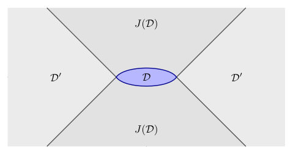
<figcaption class="paper-figure-caption"><b>Fig 1.</b> Figure 1. Sketch in 1 + 1 dimensions, with time increasing upwards, showing a bounded spacetime region D, its causal complement D′, and its causal future and past, denoted by J(D).</figcaption>
</figure>
</div>

<p><strong>Summary.</strong> This paper deeply explores strictly localized mixed states in QFT, defining them as states indistinguishable from the vacuum outside a given region. It distinguishes between states resulting from standard non-selective measurements (which are mixtures of pure states) and more general states from unsharp measurements. The key finding is that some strictly localized mixed states defy such a simple decomposition, providing deep insights into the nature of quantum correlations and measurement theory.</p>
<p><strong>Why it may be interesting.</strong> This work is highly relevant to open quantum systems and quantum foundations, as it rigorously defines the boundaries between classical ignorance (mixtures of pure states) and genuine quantum correlations in localized systems.</p>
<details>
<summary>Detailed structure</summary>
<p><strong>Main problem.</strong> The paper investigates the mathematical and physical properties of strictly localized mixed states in quantum field theory (QFT). It specifically contrasts states arising from non-selective measurements versus those from unsharp measurements.</p>
<p><strong>Main result.</strong> While non-selective measurements yield states decomposable into mixtures of pure states, the authors prove the existence of strictly localized mixed states that cannot be written as such mixtures, and they extend Knight's theorem to show these states must have infinite particle number support.</p>
<p><strong>Method.</strong> The analysis uses the mathematical framework of local algebras $A(O)$ in QFT, employing concepts like Licht maps, Kraus operators, and extensions of particle number counting arguments.</p>
<p><strong>Model / system.</strong> The system is quantum field theory, modeled using local algebras associated with spacetime regions $O$. The analysis uses analogies to two-qubit systems and focuses on bosonic quantum fields.</p>
<p><strong>Key observables.</strong> Strict localization condition ($   ext{tr}(A
ho) =   ext{tr}(A\Omega)$ for $A$ outside the region), particle number support, and the structure of the density matrix decomposition.</p>
<p><strong>Important parameters / regimes.</strong> The localization region $O$, the type of measurement (sharp vs. unsharp), and the particle number $N$.</p>
<p><strong>Assumptions / limitations.</strong> The analysis relies on the structure of local algebras and the ability to define non-selective operations (Licht maps).</p>
<p><strong>Figures summary.</strong> Figure 1 sketches spacetime regions ($D$, $D'$, $J(D)$) in $1+1$ dimensions, illustrating the regions relevant to localization.</p>
<p><strong>Paper structure.</strong> The paper progresses by introducing strict localization, analyzing the non-selective state from local measurements (showing it decomposes into pure states), then constructing counterexamples using unsharp measurements, and finally extending Knight's theorem to mixed states.</p>
</details>
<details>
<summary>Abstract</summary>
<p>We study strictly localized mixed states in quantum field theory: states that are indistinguishable from vacuum outside some spacetime region. Such states are generated from the vacuum by so-called Licht maps. While the states associated with individual outcomes of local, projective measurements on the vacuum are not strictly localized, the corresponding non-selective states are strictly localized and even admit decompositions into strictly localized pure states. Remarkably, however, there are strictly localized mixed states that cannot be written as mixtures of pure states strictly localized to the same region. Such states can arise from unsharp local measurements. Finally, we extend Knight's theorem to mixed states, showing that strictly localized bosonic mixed states contain terms with arbitrarily high particle numbers.</p>
</details>
<p><sub><a href="#top">↑ back to top</a></sub></p>

<p><a id="paper-2609.17116"></a></p>
<h3 id="thouless-pumping-via-discrete-jumping-of-the-adiabatic-hamiltonian"><a href="http://arxiv.org/abs/2609.17116v1">Thouless pumping via discrete jumping of the adiabatic Hamiltonian</a></h3>
<p><strong>Authors:</strong> Lang Yu, Yihan Wu, Zhen-Yu Wang<br>
<strong>Type:</strong> theory · <strong>Category:</strong> other · <strong>PDF:</strong> <a href="https://arxiv.org/pdf/2609.17116v1">https://arxiv.org/pdf/2609.17116v1</a><br>
<strong>Analysis basis:</strong> full PDF text, analyzed in chunks
<strong>Topic relevance:</strong> <code>analog quantum simulation</code> <strong>3/5</strong> · <code>quantum measurements</code> <strong>1/5</strong></p>
<div class="figure-strip-hint">↔ Scroll figures horizontally</div>
<div class="paper-figures-scroll">
<figure class="paper-figure-card">
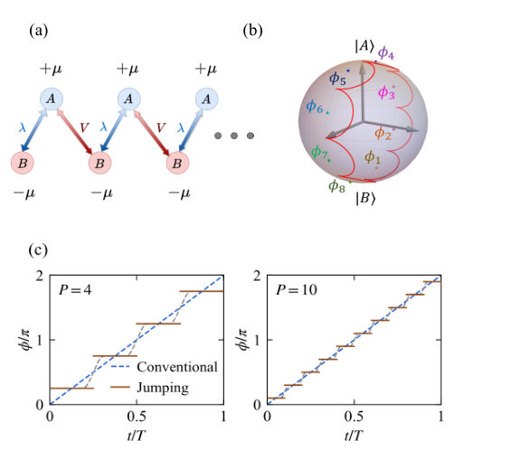
<figcaption class="paper-figure-caption"><b>Fig 1.</b> FIG. 1. (a) Schematic of the Rice-Mele model with periodi- cally modulated parameters µ, λ, and V for Thouless pump- ing. (b) Trajectory (red curve) for the k = l pseudospin under the adiabatic jumping control with P = 8. The ro- tating axes for the trajectory are determined by H(ϕ) with ϕ = ϕ1, ϕ2, . . . , ϕP . (c) The functional forms of ϕ(t) for the conventional Thouless pumping (blue dashed lines) and adia- batic jumping control (stepwise red solid line) in one pump- ing period T for different P. The gray dashed line shows the smoothed version of the jumping scheme, where each abrupt jump is replaced by a sinusoidal transition [see Eq. (19)].</figcaption>
</figure>
<figure class="paper-figure-card">
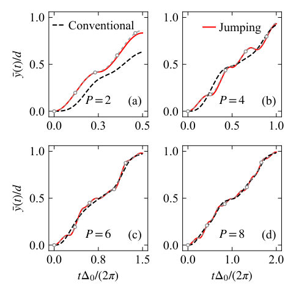
<figcaption class="paper-figure-caption"><b>Fig 2.</b> FIG. 2. Comparison of ¯y(t) between the conventional adi- abatic scheme (black dashed lines) and the adiabatic jump- ing scheme (red lines) for different pumping period T. Here T = Pπ/(2∆0). (a)-(d) Time evolution of ¯y(t) for P = 2, 4, 6, and 8, respectively. The parameters used in the simula- tion are: J = −2π, ∆0 = 4π, δ0 = 0.5∆0 and lattice number N = 801. The gray dashed line with open circles shows the re- sults of the jumping scheme with sinusoidal transitions given by Eq. (19), with τ = 0.5tpulse.</figcaption>
</figure>
<figure class="paper-figure-card">
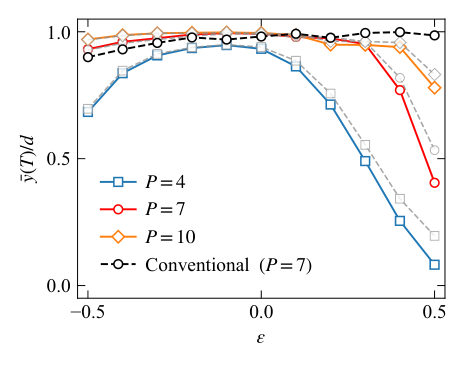
<figcaption class="paper-figure-caption"><b>Fig 3.</b> FIG. 3. Robustness of adiabatic jumping approach in the presence of error ε. ¯y(T)/d remains close to the quantized value C = 1 for a wider range of ε when P is larger. Compar- ing the conventional scheme (black circles) with the jumping approach with the same pumping period T (red circles), the jumping approach shows better performance than the conven- tional scheme for ε &lt; 0. The parameters used in the simula- tion are: J = −2π, ∆0 = 4π, δ0 = 0.5∆0 and lattice number N = 801. The gray dashed lines are the results when the dis- crete jumps of ϕ are changed to sinusoidal transitions given by Eq. (19) using a transition time τ = 0.5tpulse.</figcaption>
</figure>
<figure class="paper-figure-card">
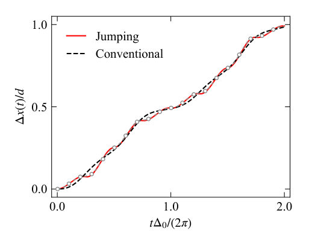
<figcaption class="paper-figure-caption"><b>Fig 4.</b> FIG. 4. Mean displacement ∆x(t) during one pumping cy- cle for the adiabatic jumping approach with P = 8 (red solid line). The black dashed line is the result for the con- ventional Thouless pumping using the same pumping period T = Pπ/(2∆0). The result shows a quantized displacement of one unit cell (∆x(T)/d = 1) at the end of one pumping period T, confirming the successful topological pumping. We choose J = −2π, ∆0 = 4π, δ0 = 0.5∆0, lattice number N = 801, and Wannier state is initially localized at m0 = 0 in the posi- tion space. The gray dashed line with open circles shows the results of the adiabatic jumping scheme with sinusoidal tran- sitions defined in Eq. (19), with transition time...</figcaption>
</figure>
<figure class="paper-figure-card">

<figcaption class="paper-figure-caption"><b>Fig 5.</b> FIG. 5. The temporal evolution of the wave function dur- ing one pumping period T. (a) and (b) show the evolution of the probability |ψm(t)|2 for the conventional and jumping schemes, respectively. (c) and (e) show the real and imagi- nary parts of ψσ,m(t) for σ = A and B, respectively, for the conventional scheme. (d) and (f) are the same as (c) and (e), but for the jumping scheme. Here J = −2π, ∆0 = 4π, δ0 = 0.5∆0, P = 8, and lattice number N = 801. The Wan- nier state is initially localized at m0 = 0 in real space.</figcaption>
</figure>
</div>

<p><strong>Summary.</strong> This paper introduces a novel method to achieve Thouless pumping, a topological transport effect, by replacing the requirement for slow, continuous Hamiltonian variation with discrete parameter jumping. By applying the Hamiltonian only at specific points, the authors successfully realize adiabatic evolution, confirming quantized particle transport while bypassing significant experimental control challenges.</p>
<p><strong>Why it may be interesting.</strong> This work is highly relevant as it provides a pathway to implement complex topological quantum phenomena using fast, discrete control pulses, circumventing the stringent experimental limitations associated with slow, continuous Hamiltonian modulation.</p>
<details>
<summary>Detailed structure</summary>
<p><strong>Main problem.</strong> The paper addresses the challenge of realizing Thouless pumping, a topological effect, without adhering to the conventional requirement of continuously and slowly varying the Hamiltonian.</p>
<p><strong>Main result.</strong> It demonstrates that Thouless pumping can be successfully achieved using only discrete sampling (jumping) of the Hamiltonian parameters, maintaining adiabaticity and achieving quantized particle transport.</p>
<p><strong>Method.</strong> The authors propose an adiabatic jumping control scheme where the Hamiltonian is applied only at a finite set of discrete parameter points, effectively realizing the required evolution via geodesic paths.</p>
<p><strong>Model / system.</strong> The study uses the Rice–Mele model to simulate the quantum system undergoing Thouless pumping. The Hamiltonian is analyzed in momentum space, $H_k(\phi) = h_x(k) \sigma_x + h_y(k) \sigma_y + h_z(k) \sigma_z$.</p>
<p><strong>Key observables.</strong> Quantized particle transport (characterized by the Chern number $C$), the adiabaticity measure $ar{y}(T)/d$, and the mean displacement $\langle \hat{x}(t) 
angle$.</p>
<p><strong>Important parameters / regimes.</strong> The number of sampling points $P$, the pulse time $t_p$, and the comparison between continuous vs. discrete control parameters.</p>
<p><strong>Assumptions / limitations.</strong> The method relies on the necessary and sufficient condition for quantum adiabatic evolution, and the nonadiabatic error is shown to vanish as the number of sampling points $P$ increases.</p>
<p><strong>Figures summary.</strong> Figures compare the control parameter evolution ($\phi(t)$) between conventional and jumping methods, and show the resulting quantized mean displacement $\Delta x(T)/d$ and the temporal evolution of the wave function probability $|\psi_m(t)|^2$.</p>
<p><strong>Paper structure.</strong> The paper first introduces the problem of continuous control, then details the discrete jumping approach, providing theoretical analysis (Appendix B) on nonadiabatic corrections, and finally presents numerical results comparing the jumping scheme against the standard adiabatic protocol.</p>
</details>
<details>
<summary>Abstract</summary>
<p>Thouless pumping is a celebrated topological effect that enables quantized particle transport and holds promise for applications in quantum technologies. However, the standard adiabatic pumping theory dictate that the Hamiltonian must be varied continuously and slowly throughout the whole pumping process. In this work, we show that Thouless pumping can be realized by using only discrete sampling of the Hamiltonian, removing the conventional constraint of continuous and slow change of control. Specifically, we select particular parameter points of the Hamiltonian for conventional continuous quantum adiabatic evolution, and then apply the Hamiltonian at these parameter points which induces a geodesic evolution for the pseudospin with a given quasimomentum. This realizes an adiabatic evolution for the Thouless pumping according to a necessary and sufficient condition for quantum adiabatic evolution.</p>
</details>
<p><sub><a href="#top">↑ back to top</a></sub></p>

<p><a id="paper-2609.16520"></a></p>
<h3 id="truncated-hybrid-tensor-networks-for-distributed-quantum-simulation"><a href="http://arxiv.org/abs/2609.16520v1">Truncated hybrid tensor networks for distributed quantum simulation</a></h3>
<p><strong>Authors:</strong> Yong Liu, Guangyao Huang, Weixu Shi, Yizhi Wang, Jiandong Ouyang, Zeqian Chen, Junjie Wu<br>
<strong>Type:</strong> theory · <strong>Category:</strong> numerical methods · <strong>PDF:</strong> <a href="https://arxiv.org/pdf/2609.16520v1">https://arxiv.org/pdf/2609.16520v1</a><br>
<strong>Analysis basis:</strong> abstract only; PDF text extraction failed or PDF unavailable
<strong>Topic relevance:</strong> <code>methods for driven-dissipative</code> <strong>3/5</strong> · <code>analog quantum simulation</code> <strong>1/5</strong></p>
<p><strong>Summary.</strong> This paper introduces the Truncated Hybrid Tensor Network (THTN) framework to enable the simulation of large quantum many-body systems across multiple, physically separated computing units. It overcomes the exponential cost of current distributed protocols by representing remote gates via classical connecting tensors. The method is validated against TEBD, showing improved scalability, particularly for layered physical models.</p>
<p><strong>Why it may be interesting.</strong> This is highly relevant as it provides a concrete, resource-aware numerical technique (THTN) to simulate large quantum systems that cannot fit on single devices, directly addressing scalability issues in quantum simulation.</p>
<details>
<summary>Detailed structure</summary>
<p><strong>Main problem.</strong> Simulating quantum many-body systems on quantum computers is limited by qubit count, necessitating methods for distributed simulation across multiple classical systems.</p>
<p><strong>Main result.</strong> The authors propose a Truncated Hybrid Tensor Network (THTN) framework that efficiently handles distributed quantum evolution by linking subsystems with classical tensors while retaining crucial Schmidt modes.</p>
<p><strong>Method.</strong> The THTN framework models remote two-body gates as sums of local unitaries connected by a classical tensor, allowing non-one-dimensional models to be mapped onto a 1D cut.</p>
<p><strong>Model / system.</strong> The work addresses the simulation of quantum many-body systems, specifically validating the protocol against Time-Evolving Block Decimation (TEBD) on chains and ladders.</p>
<p><strong>Key observables.</strong> Local observables and the tracking of dynamics compared to TEBD references.</p>
<p><strong>Important parameters / regimes.</strong> Bond dimension, number of remote gates across the cut.</p>
<p><strong>Assumptions / limitations.</strong> The protocol assumes that the physical correlations across the cut can be effectively captured by retaining Schmidt modes via interface truncation.</p>
<p><strong>Figures summary.</strong> The notes do not provide a summary of figures, only the validation comparison against TEBD on chains and ladders, showing the clearest gain on a layered model.</p>
<p><strong>Paper structure.</strong> The paper introduces the THTN framework, details how remote gates are decomposed and how non-1D models are mapped, and validates the protocol by comparing its dynamics to established methods like TEBD.</p>
</details>
<details>
<summary>Abstract</summary>
<p>Simulation of quantum many-body systems is a principal application of quantum computing, but available devices remain limited by the number of qubits and cannot accommodate systems of the desired size. One approach is to host a large evolution across several modest distributed systems that exchange classical information alone. Current protocols such as circuit knitting incur a quasi-probability sampling cost that grows exponentially with the number of remote gates across the cut, even when physical correlations across the cut are actually bounded. In this work, we present a truncated hybrid tensor network (THTN) framework in which a remote two-body gate is applied as a sum of local unitaries on the subsystems, linked by a classical connecting tensor, and an interface truncation retains Schmidt modes across the cut. Remote gates between the same subsystems can be merged on one connector, so non-one-dimensional models, such as layered partitions with strong intra-layer and weaker interlayer couplings, may be cast onto a one-dimensional cut. The retained non-negative Schmidt coefficients also define a sampling rule for local observables. We validate this distributed protocol by classical simulation against time-evolving block decimation (TEBD) at the same bond dimension. The truncated dynamics track the TEBD references on chains and ladders, with the clearest gain on a layered model.</p>
</details>
<p><sub><a href="#top">↑ back to top</a></sub></p>

<p><a id="paper-2609.17497"></a></p>
<h3 id="beyond-hardware-adaptive-algorithmic-control-by-state-proxy-equalization"><a href="http://arxiv.org/abs/2609.17497v1">Beyond Hardware: Adaptive Algorithmic Control by State-Proxy Equalization</a></h3>
<p><strong>Authors:</strong> Jianlong Lu, Hongrui Zhang, Vishal Sharathchandra Bajpe, Thorsten Koch, Ying Chen<br>
<strong>Type:</strong> both · <strong>Category:</strong> quantum information and computing · <strong>PDF:</strong> <a href="https://arxiv.org/pdf/2609.17497v1">https://arxiv.org/pdf/2609.17497v1</a><br>
<strong>Analysis basis:</strong> full PDF text, analyzed in chunks
<strong>Topic relevance:</strong> <code>quantum measurements</code> <strong>3/5</strong></p>
<div class="figure-strip-hint">↔ Scroll figures horizontally</div>
<div class="paper-figures-scroll">
<figure class="paper-figure-card">

<figcaption class="paper-figure-caption"><b>Fig 1.</b> Fig. 1 State-Proxy Equalization and Adaptive Algorithmic Control (A2C). a, A quan- tum state |ψ(s)⟩evolves along a normalized trajectory s ∈[0, 1], where the computational hardness r(s) varies according to the local quantum dynamics. The trajectory is partitioned into p computa- tional intervals {[sℓ−1, sℓ]}p ℓ=1. b, Variational formulation of the optimal computational allocation. Theorem 1 shows that the optimal computational coordinate is obtained by cumulative state-proxy equalization, leading to equal accumulated hardness in every computational interval. c, Geomet- ric interpretation of the State-Proxy Equalization principle. Instead of equalizing physical time, the optimal schedule...</figcaption>
</figure>
</div>

<p><strong>Summary.</strong> This paper proposes Adaptive Algorithmic Control (A2C), a software technique that optimizes quantum computation by allocating resources based on the evolving computational difficulty of the state. By proving that optimal performance requires equalizing cumulative computational hardness, A2C significantly boosts sampling probabilities in quantum optimization benchmarks across large qubit counts.</p>
<p><strong>Why it may be interesting.</strong> It provides a crucial algorithmic pathway for quantum computation, showing that software control over resource allocation can yield performance gains comparable to, or exceeding, hardware improvements in near-term quantum devices.</p>
<details>
<summary>Detailed structure</summary>
<p><strong>Main problem.</strong> To determine how to optimally allocate finite computational resources during a quantum computation to maximize performance, moving beyond reliance solely on hardware improvements.</p>
<p><strong>Main result.</strong> Adaptive Algorithmic Control (A2C) significantly improves low-energy sampling probabilities in quantum optimization problems by concentrating computational effort where the state dynamics are most difficult.</p>
<p><strong>Method.</strong> The authors introduce A2C, a software paradigm based on the State-Proxy Equalization theorem, which dictates that optimal resource allocation must equalize cumulative computational hardness rather than physical time.</p>
<p><strong>Model / system.</strong> The work applies to quantum optimization problems, modeled using frameworks like QAOA, involving state evolution over a normalized trajectory $s \in [0, 1]$. The complexity is assessed by inferring a computational hardness profile $r(s)$ from the evolving quantum state.</p>
<p><strong>Key observables.</strong> Low-energy sampling probabilities, success probability $P_{	ext{succ}}(
ho)$, and the derived computational hardness $r(s)$.</p>
<p><strong>Important parameters / regimes.</strong> Circuit depth ($p$), number of qubits ($N$ up to 156), and the resource allocation schedule (Adaptive vs. Linear Ramp).</p>
<p><strong>Assumptions / limitations.</strong> The method assumes that the required computational hardness $r(s)$ can be inferred directly from state-accessible dynamical quantities, avoiding explicit reconstruction of the full many-body spectrum.</p>
<p><strong>Figures summary.</strong> Figure 1 illustrates the core principle: comparing resource allocation that equalizes physical time versus that which equalizes cumulative computational hardness via an 'adaptive warp'.</p>
<p><strong>Paper structure.</strong> The paper develops the A2C theory using the State-Proxy Equalization theorem, applies it to QAOA benchmarks, and rigorously validates the results by comparing success probabilities and calculating statistical confidence intervals for the performance gains.</p>
</details>
<details>
<summary>Abstract</summary>
<p>Recent advances in quantum computing have been driven primarily by improvements in hardware. Here we show that substantial gains can instead arise from how finite computational resources are allocated throughout a quantum computation. We introduce Adaptive Algorithmic Control (A2C), a software paradigm founded on a State-Proxy Equalization theorem, which proves that the optimal allocation for a state-derived proxy-error functional equalizes cumulative computational hardness rather than physical time. The required computational hardness is inferred directly from the evolving quantum state, avoiding explicit reconstruction of the exponentially large many-body spectrum. Across quantum optimization problems containing up to 156 qubits, combining exact simulations, large-scale supercomputer computations and IBM quantum hardware experiments, A2C improves the low-energy sampling probabilities by $22\%$ to over $100,000\%$ under matched circuit depths and measurement budgets. These results demonstrate that quantum computational performance depends not only on hardware capabilities, but also on how finite computational resources are organized, establishing adaptive algorithmic control as a complementary software pathway for advancing quantum computation.</p>
</details>
<p><sub><a href="#top">↑ back to top</a></sub></p>

<p><a id="paper-2609.17313"></a></p>
<h3 id="exceptional-topology-survives-strong-hermitian-fields-in-radiative-atomic-arrays"><a href="http://arxiv.org/abs/2609.17313v1">Exceptional Topology Survives Strong Hermitian Fields in Radiative Atomic Arrays</a></h3>
<p><strong>Authors:</strong> Tian-Shu Gou, Yi-Cheng Wang, Ya-Tang Yu, Guin-Dar Lin, Jhih-Shih You, H. H. Jen<br>
<strong>Type:</strong> theory · <strong>Category:</strong> other · <strong>PDF:</strong> <a href="https://arxiv.org/pdf/2609.17313v1">https://arxiv.org/pdf/2609.17313v1</a><br>
<strong>Analysis basis:</strong> full PDF text, analyzed in chunks
<strong>Topic relevance:</strong> <code>analog quantum simulation</code> <strong>3/5</strong></p>
<div class="figure-strip-hint">↔ Scroll figures horizontally</div>
<div class="paper-figures-scroll">
<figure class="paper-figure-card">

<figcaption class="paper-figure-caption"><b>Fig 1.</b> Low-resolution page preview, page 2</figcaption>
</figure>
<figure class="paper-figure-card">

<figcaption class="paper-figure-caption"><b>Fig 2.</b> Low-resolution page preview, page 3</figcaption>
</figure>
<figure class="paper-figure-card">

<figcaption class="paper-figure-caption"><b>Fig 3.</b> Low-resolution page preview, page 4</figcaption>
</figure>
<figure class="paper-figure-card">

<figcaption class="paper-figure-caption"><b>Fig 4.</b> Low-resolution page preview, page 5</figcaption>
</figure>
<figure class="paper-figure-card">

<figcaption class="paper-figure-caption"><b>Fig 5.</b> Low-resolution page preview, page 6</figcaption>
</figure>
</div>

<p><strong>Summary.</strong> This paper analyzes the topological robustness of radiative atomic arrays by studying how exceptional points behave under strong magnetic fields. The authors show that the system's Chern topology remains fixed across various deformations, providing a method to engineer topological states beyond expected strong-field limitations. This work is significant for understanding topological control in engineered quantum optical systems.</p>
<p><strong>Why it may be interesting.</strong> This work directly addresses topological phenomena in engineered quantum systems (atomic arrays) using concepts from condensed matter theory (Chern numbers, EPs) but is highly relevant to AMO physics due to the use of atomic lattices and light-matter interactions.</p>
<details>
<summary>Detailed structure</summary>
<p><strong>Main problem.</strong> The study investigates how topological defects, specifically exceptional points (EPs), behave in two-dimensional subwavelength atomic arrays when subjected to strong Hermitian magnetic fields.</p>
<p><strong>Main result.</strong> The research demonstrates that the topological invariants (Chern numbers) remain robust even when the system passes through exceptional regions, establishing a mechanism to engineer topology beyond conventional strong-field limits.</p>
<p><strong>Method.</strong> The authors employed analytical calculations of the Berry curvature and integrated Berry flux, alongside constructing effective models for phase boundaries near lattice deformation limits.</p>
<p><strong>Model / system.</strong> The system is a radiative atomic array modeled on a square-to-triangular lattice deformation, governed by a polarization-dependent Hamiltonian that includes radiative dipolar couplings.</p>
<p><strong>Key observables.</strong> Berry Flux ($\pm 1$), Chern Numbers ($C_1=2, C_2=-2$), and the field-dependent localization of boundary modes (skin localization).</p>
<p><strong>Important parameters / regimes.</strong> Lattice deformation angle ($    heta$), magnetic field strength ($B$), and the critical Zeeman shift ($\mu_B B_c$).</p>
<p><strong>Assumptions / limitations.</strong> The analysis relies on approximations such as first-order deformation expansions for boundary analysis and assuming decoupling from free-space modes for outer contributions.</p>
<p><strong>Figures summary.</strong> Figure S8 illustrates the analytical exceptional-phase boundaries, mapping the critical Zeeman shift against lattice deformation for both the square and triangular lattice limits.</p>
<p><strong>Paper structure.</strong> The paper proceeds by deriving the Hamiltonian and calculating the Berry flux for the quadratic continuum model, followed by determining analytical phase boundaries for the SL and TL limits, and finally analyzing the non-monotonic response of skin localization to the magnetic field.</p>
</details>
<details>
<summary>Abstract</summary>
<p>Exceptional points are topological defects of complex band structures that are stable against weak perturbations, yet in bounded two-band systems they are ultimately removed by a sufficiently strong Hermitian field. Here we demonstrate a striking exception in a two-dimensional subwavelength atomic array. Along a continuous square-to-triangular deformation at fixed magnetic field, the bulk passes between line-gapped topological regions with band Chern numbers (C_1,C_2)=(2,-2) through a gapless exceptional region. Within a finite interval of lattice deformation, increasing the magnetic field merely drives the exceptional points toward the light cone because of the singular radiative dipolar couplings. We further show that skin localization toward open boundaries responds non-monotonically to the same field. An intermediate field drives a bipolar skin localization, with bulk modes accumulating at opposite edges, whereas stronger fields suppress boundary localization. Our results establish the interplay of lattice geometry, light-cone singularity, and Hermitian magnetic field as a route to engineering Chern and exceptional topology beyond the conventional strong-field limit.</p>
</details>
<p><sub><a href="#top">↑ back to top</a></sub></p>

<p><a id="paper-2609.16142"></a></p>
<h3 id="investigating-interacting-fermionic-models-with-locality-preserving-qubit-encodings"><a href="http://arxiv.org/abs/2609.16142v1">Investigating Interacting Fermionic Models with Locality-Preserving Qubit Encodings</a></h3>
<p><strong>Authors:</strong> Ashutosh P. Tripathi, Debasish Banerjee, Sandip Maiti, Nilmani Mathur<br>
<strong>Type:</strong> theory · <strong>Category:</strong> strongly correlated electrons · <strong>PDF:</strong> <a href="https://arxiv.org/pdf/2609.16142v1">https://arxiv.org/pdf/2609.16142v1</a><br>
<strong>Analysis basis:</strong> full PDF text, analyzed in chunks
<strong>Topic relevance:</strong> <code>analog quantum simulation</code> <strong>3/5</strong></p>
<div class="figure-strip-hint">↔ Scroll figures horizontally</div>
<div class="paper-figures-scroll">
<figure class="paper-figure-card">

<figcaption class="paper-figure-caption"><b>Fig 1.</b> Figure 2. Loop products around odd (left) and even (right) faces. The odd-face product is an operator identity, whereas the even-face product defines a nontrivial stabilizer.</figcaption>
</figure>
<figure class="paper-figure-card">

<figcaption class="paper-figure-caption"><b>Fig 2.</b> Figure 3. Schematic diagram of an HVA circuit</figcaption>
</figure>
<figure class="paper-figure-card">

<figcaption class="paper-figure-caption"><b>Fig 3.</b> Figure 4. Schematic diagram of a DK HVA circuit</figcaption>
</figure>
<figure class="paper-figure-card">

<figcaption class="paper-figure-caption"><b>Fig 4.</b> Figure 6. DK HVA circuit with compact gates for 3×3 lattice. Gates written in compact form in the circuit denote Pauli-string rotations. A Pauli string such as xxy, xx, or zz is associated with an angle θ[n] and a set of indices 0, 1, 2. Since the compact gate representation spans multiple wires (qubits), the indices identify the circuit wires (qubits) on which the Pauli operators act, in the same order as the operators in the Pauli string. For example, a gate (indicated by blue arrow in the circuit) labeled xxy with angle θ[4] and indices (0, 1, 2) acts on qubits (q2, q1, q0), respectively; and represents the unitary e−i</figcaption>
</figure>
<figure class="paper-figure-card">

<figcaption class="paper-figure-caption"><b>Fig 5.</b> Figure 7. Energy for the 3 × 3 lattice with zero chemical potential. The dashed lines correspond to QuSpin ED calcu- lations.</figcaption>
</figure>
</div>

<p><strong>Summary.</strong> This work proposes a practical quantum simulation framework for interacting fermionic models using the locality-preserving Derby-Klassen mapping. By encoding fermionic physics into a constrained qubit subspace defined by stabilizer codes, it significantly reduces operator nonlocality compared to standard methods. This provides a resource-efficient route for simulating complex, higher-dimensional correlated electron systems on quantum computers.</p>
<p><strong>Why it may be interesting.</strong> The development of locality-preserving mappings directly addresses a major bottleneck in quantum simulation—the exponential growth of Pauli string length—making complex lattice models more tractable on near-term quantum hardware.</p>
<details>
<summary>Detailed structure</summary>
<p><strong>Main problem.</strong> The paper addresses the challenge of simulating strongly correlated fermionic systems, such as the $t$-$V$ and Fermi-Hubbard models, which suffer from the fermionic sign problem.</p>
<p><strong>Main result.</strong> The locality-preserving Derby-Klassen (DK) mapping provides a resource-efficient framework for quantum simulation by reducing operator nonlocality compared to standard Jordan-Wigner transformations, especially in higher dimensions.</p>
<p><strong>Method.</strong> The authors employ the Variational Quantum Eigensolver (VQE) combined with the DK mapping, which encodes fermionic operators into a constrained subspace of a larger qubit Hilbert space defined by stabilizer constraints.</p>
<p><strong>Model / system.</strong> The study focuses on two-dimensional interacting fermionic models, specifically the $t$-$V$ and spinful Fermi-Hubbard models, analyzed on lattices with periodic boundary conditions.</p>
<p><strong>Key observables.</strong> Low-energy properties, energy spectra, and the ability to resolve distinct symmetry sectors via particle-number conservation.</p>
<p><strong>Important parameters / regimes.</strong> Non-zero chemical potential ($\mu$), coupling constant ($V$), and lattice size ($L_x 	imes L_y$).</p>
<p><strong>Assumptions / limitations.</strong> The method assumes that the physical fermionic Hilbert space can be accurately represented as the $+1$ eigenspace of local stabilizer operators derived from the DK mapping.</p>
<p><strong>Figures summary.</strong> Figures illustrate lattice structures, the checkerboard arrangement of face qubits forming a toric code, and the corresponding Clifford circuits used to diagonalize stabilizer operators.</p>
<p><strong>Paper structure.</strong> The paper first introduces the DK mapping and its locality-preserving nature, then details the construction of the Hamiltonian Variational Ansatz (HVA) using stabilizer constraints. It benchmarks this against JW circuits and extends the framework to the spinful Hubbard model, concluding with a discussion of the practical overhead trade-offs.</p>
</details>
<details>
<summary>Abstract</summary>
<p>We investigate the utility of the locality-preserving Derby-Klassen (DK) fermion-to-qubit mapping [arXiv:2003.06939] for variational quantum simulation of two-dimensional $t$-$V$ and Fermi-Hubbard models. The DK mapping preserves the locality of fermionic interactions with an enlarged Hilbert space, thereby requiring additional constraints that define the physical sector. We incorporate these constraints directly into a Hamiltonian Variational Ansätz (HVA) through Clifford-gate state preparation and use the Variational Quantum Eigensolver (VQE) to show that the low-energy properties of the resulting qubit Hamiltonian are accurately reproduced. We further exploit particle-number conservation inherent in the ansätz to resolve distinct symmetry sectors and reliably access degenerate states. Consequently, we benchmark the DK-HVA against Jordan-Wigner-based variational circuits at nonzero chemical potential, where particle-hole symmetry and the associated half-filled sign-free condition are absent. Finally, we demonstrate the advantage of locality-preserving mappings in higher-dimensional fermionic systems, where the conventional Jordan-Wigner (JW) transformation generates increasingly long Pauli strings and corresponding circuit overheads. We further extend the framework to the spinful Fermi-Hubbard model and identify a tradeoff between fermionic-mode placement and the locality of hopping and on-site interaction terms. These results establish a practical framework combining locality-preserving fermion-to-qubit mappings, constraint-preserving Clifford state preparation, and symmetry-preserving variational circuits, that trades auxiliary-qubit and stabilizer-preparation overhead for reduced operator nonlocality, providing a practical route toward resource-efficient quantum simulation of higher-dimensional interacting fermionic systems.</p>
</details>
<p><sub><a href="#top">↑ back to top</a></sub></p>

<p><a id="paper-2609.16162"></a></p>
<h3 id="persistent-spontaneous-time-reversal-breaking"><a href="http://arxiv.org/abs/2609.16162v1">Persistent Spontaneous Time-Reversal Breaking</a></h3>
<p><strong>Authors:</strong> Michael Smolkin, Lev Yung<br>
<strong>Type:</strong> theory · <strong>Category:</strong> statistical mechanics · <strong>PDF:</strong> <a href="https://arxiv.org/pdf/2609.16162v1">https://arxiv.org/pdf/2609.16162v1</a><br>
<strong>Analysis basis:</strong> full PDF text, analyzed in chunks
<strong>Topic relevance:</strong> <code>Keldysh / 2PI / non-Gaussian methods</code> <strong>3/5</strong></p>
<div class="figure-strip-hint">↔ Scroll figures horizontally</div>
<div class="paper-figures-scroll">
<figure class="paper-figure-card">

<figcaption class="paper-figure-caption"><b>Fig 1.</b> FIG. 1. ⟨χ⟩2 T /T as a function of T/y2 for ν = 1, at LO in 1/N. The dashed vertical line denotes the critical tem- perature, above which parity and time reversal are sponta- neously broken. The dashed horizontal line indicates the high- temperature biconical limit.</figcaption>
</figure>
</div>

<p><strong>Summary.</strong> This work analytically demonstrates a quantum field theory exhibiting spontaneous parity and time-reversal symmetry breaking that persists even at arbitrarily high temperatures. Using the large-N expansion in 2+1 dimensions, the authors analyze the thermal phase transition, showing that the symmetry breaking emerges upon heating rather than being present at zero temperature. This provides a controlled theoretical framework for studying non-trivial thermal phase transitions.</p>
<p><strong>Why it may be interesting.</strong> The study of symmetry breaking persistence at high temperatures is a core topic in statistical mechanics, particularly relevant for understanding high-energy phase transitions in condensed matter systems.</p>
<details>
<summary>Detailed structure</summary>
<p><strong>Main problem.</strong> The paper aims to provide an analytic realization of spontaneous parity and time-reversal breaking (PSSB) in a quantum field theory without the symmetry breaking being restored by finite temperature.</p>
<p><strong>Main result.</strong> The theory exhibits a persistent spontaneous breaking of parity and time-reversal symmetry above a critical temperature, surviving to arbitrarily high temperatures.</p>
<p><strong>Method.</strong> The analysis uses the large-N expansion, finite-temperature effective potential calculations, and renormalization group flow techniques to study the phase structure.</p>
<p><strong>Model / system.</strong> The model is a quantum field theory in 2+1 dimensions, defined by a Yukawa deformation coupling a critical biconical vector model to free massless Dirac fermions.</p>
<p><strong>Key observables.</strong> The thermal expectation value of the field $\langle\chi
angle_T$, and the persistence of a fermion mass odd under parity and time reversal.</p>
<p><strong>Important parameters / regimes.</strong> The critical temperature ($T_{crit}$), the large-$N$ limit, and the coupling constants governing the Yukawa interaction.</p>
<p><strong>Assumptions / limitations.</strong> The analysis relies on the large-N expansion and assumes the system is away from narrow parametric windows where finite-N corrections dominate.</p>
<p><strong>Figures summary.</strong> Figure 1 illustrates the thermal expectation value $\langle\chi
angle_T / T$ versus $T/y^2$, marking the critical temperature $T_{crit}$ above which symmetry is spontaneously broken.</p>
<p><strong>Paper structure.</strong> The paper progresses by establishing the model, analyzing the RG flow from a UV CFT to an IR fixed point, and then performing a detailed finite-temperature analysis using the large-N saddle-point approximation to determine the phase transition.</p>
</details>
<details>
<summary>Abstract</summary>
<p>We provide an analytic realization of spontaneous parity and time-reversal breaking without thermal restoration in a local, unitary, ultraviolet-complete quantum field theory in $2+1$ dimensions with finitely many fields. The theory is defined by a relevant Yukawa deformation of a product of the critical biconical vector model and free massless Dirac fermions. This deformation induces a renormalization group flow whose infrared endpoint is a decoupled product of the critical vector model and the conformal Gross-Neveu-Yukawa model. At zero temperature, the vacuum preserves both symmetries, whereas upon heating, the theory undergoes an inverse thermal transition at a finite critical temperature. Above this temperature, a fermion mass, odd under parity and time reversal, is dynamically generated, and the broken phase persists to arbitrarily high temperatures.</p>
</details>
<p><sub><a href="#top">↑ back to top</a></sub></p>

<p><a id="paper-2609.17411"></a></p>
<h3 id="sharp-bounds-for-perfect-quantum-state-classification-beyond-antidistinguishability"><a href="http://arxiv.org/abs/2609.17411v1">Sharp bounds for perfect quantum state classification beyond antidistinguishability</a></h3>
<p><strong>Authors:</strong> Nathaniel Johnston, Benjamin Lovitz, Vincent Russo, Jamie Sikora<br>
<strong>Type:</strong> theory · <strong>Category:</strong> quantum information and computing · <strong>PDF:</strong> <a href="https://arxiv.org/pdf/2609.17411v1">https://arxiv.org/pdf/2609.17411v1</a><br>
<strong>Analysis basis:</strong> full PDF text, analyzed in chunks
<strong>Topic relevance:</strong> <code>quantum measurements</code> <strong>3/5</strong></p>
<div class="figure-strip-hint">↔ Scroll figures horizontally</div>
<div class="paper-figures-scroll">
<figure class="paper-figure-card">

<figcaption class="paper-figure-caption"><b>Fig 1.</b> Figure 1: Simplex states for n = 3 (left) and n = 4 (right), drawn as unit vectors in Rn−1. Explicitly, |ψ1⟩= |0⟩and |ψ2,3⟩= −1</figcaption>
</figure>
</div>

<p><strong>Summary.</strong> This paper introduces $k$-learnability as a generalized measure for partial quantum state identification, interpolating between full distinguishability and anti-distinguishability. It derives optimal Gram-matrix criteria that provide necessary and sufficient conditions for a set of states to be $k$-learnable. The results are highly applicable to understanding the resource requirements for quantum state characterization in various physical systems.</p>
<p><strong>Why it may be interesting.</strong> The work provides rigorous mathematical tools to quantify how 'hard' it is to distinguish or partially identify quantum states, which is fundamental for quantum state tomography and quantum error correction protocols.</p>
<details>
<summary>Detailed structure</summary>
<p><strong>Main problem.</strong> The paper develops a unified framework to quantify the partial identification of a multiset of pure quantum states, parameterized by $k$-learnability.</p>
<p><strong>Main result.</strong> It establishes universal, optimal Gram-matrix criteria (sufficient and necessary conditions) for $k$-learnability, providing explicit guarantees for known state sets like SIC-POVMs and stabilizer states.</p>
<p><strong>Method.</strong> The analysis relies on deriving necessary and sufficient conditions based on the Gram matrix of the state set, relating $k$-learnability to concepts like $k$-incoherence and frame potentials.</p>
<p><strong>Model / system.</strong> The study concerns a general multiset of pure quantum states $\{|\psi_1
angle, \dots, |\psi_n
angle\}$ in a quantum system, often analyzed in the context of qudit systems or stabilizer states.</p>
<p><strong>Key observables.</strong> Gram matrix elements $\langle\psi_i|\psi_j
angle$, the learning parameter $k$, and the copy complexity $c_2$.</p>
<p><strong>Important parameters / regimes.</strong> The number of states $n$, the dimension $d$, and the learning parameter $k$.</p>
<p><strong>Assumptions / limitations.</strong> The results are derived under the assumption of pure quantum states and utilize advanced mathematical tools like frame potentials and properties of convex cones.</p>
<p><strong>Paper structure.</strong> The paper progresses by defining $k$-learnability, deriving general bounds using the Gram matrix (Theorem 2 &amp; 3), applying these bounds to specific state types (e.g., equiangular states), and finally analyzing the copy complexity for stabilizer states using recurrence relations.</p>
</details>
<details>
<summary>Abstract</summary>
<p>A multiset of pure quantum states is said to be k-learnable if there is a measurement strategy that always narrows an unknown sample drawn from the list down to one of at most k candidates. The parameter k interpolates between distinguishability and antidistinguishability, and provides a unified framework for partial state identification. We prove two universal, and optimal, Gram-matrix criteria for k-learnability: a Frobenius-norm sufficient condition and an entrywise-$\ell_1$ necessary condition. We apply them to derive explicit learnability and copy-complexity guarantees for several well-known sets of states including SIC-POVMs, mutually unbiased bases, and stabilizer states. We further apply our results to zero-error mutation detection problems such as anomaly detection and changepoint detection.</p>
</details>
<p><sub><a href="#top">↑ back to top</a></sub></p>
<hr>
<p>
<a href="index.html">← Index</a>
 · <a href="papers_02.html">← Previous</a> · <a href="papers_04.html">Next →</a>
</p>
<hr>

</body>
</html>
